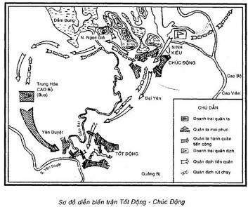

TỪ NGÀY 5 ĐẾN NGÀY 7 THÁNG 11 NĂM 1426
Ninh Kiều, máu chảy thành sông hôi tanh muôn dặm,
Tốt Động, thây phơi đầy nội, thối để nghìn thu
NGUYỄN TRÃI
Bình Ngô đại cáo
Nguyễn Trãi đã dành những lời mô tả hào hùng và đánh giá cao như trên về chiến thắng Tốt Động - Chúc Động trong bài Bình Ngô đại cáo - bản Tuyên ngôn độc lập của dân tộc ta đầu thế kỷ XV. Chiến thắng oanh liệt đó diễn ra hồi đầu tháng 11 năm 1426 khi cuộc khởi nghĩa Lam Sơn - cuộc chiến tranh giải phóng dân tộc Lê Lợi - Nguyễn Trãi lãnh đạo - đã trải qua gần chín năm chiến đấu cực kỳ gian khổ và anh dũng.
*
***
Những năm cuối thế kỷ XIV đầu thế kỷ XV...
Lúc bấy giờ triều Trần đã trở nên đồi bại và mất lòng dân nghiêm trọng. Những tầng lớp cùng khổ nhất trong xã hội lúc đó là nông nô, nô tỳ, nông dân nghèo, đã vùng lên khởi nghĩa. Ngọn lửa đấu tranh của quần chúng chưa dốt cháy được cơ đồ thống trị của nhà Trần nhưng đã làm cho vương triều này bị nghiêng ngả và càng ngày càng bước gần đến chỗ bại vong.
Năm 1400, Hồ Quý Ly nhân đó, phế truất triều Trần, thành lập một vương triều mới: triều Hồ. Nhà Hồ có đề ra và thực hiện một số cải cách về các mặt chính trị, kinh tế, xã hội, văn hóa. Công cuộc cải cách của triều Hồ có một số tiến bộ nhất định, nhưng về căn bản, nhằm củng cố quyền lợi của tập đoàn thống trị mới hơn là đưa lại lợi ích cho nhân dân, cho đất nước, và nói chung, chưa đáp ứng đầy đủ yêu cầu phát triển khách quan của xã hội. Vương triều mới vì thế gặp nhiều khó khăn và bị cô lập về mặt xã hội.
Lợi dụng cơ hội trên, nhà Minh tiến hành xâm lược nước ta. Nhà Minh vốn là một quốc gia phong kiến lớn ở phương Đông vào đầu thế kỷ XV đang ở vào giai đoạn cường thịnh nhất của triều đại này. Cuối năm 1426, nhà Minh huy động trên 20 vạn quân chiến đấu cùng hàng chục vạn quân phục dịch, ào ạt xâm lược nước ta. Cuộc kháng chiến do nhà Hồ lãnh đạo bị thất bại nhanh chóng. Nhà Hồ không đoàn kết được toàn dân, không phát huy được sức mạnh vĩ đại của cả dân tộc để chống giặc giữ nước nên chỉ sau nửa năm chống đỡ, quân đội nhà Hồ bị tan vỡ hoàn toàn.
Kể từ chiến thắng Bạch Đằng năm 938, đất nước ta sau năm thế kỷ đã giành lại và giữ vững nền độc lập, nay lại bị phong kiến nước ngoài đô hộ. Kẻ thù không những bóc lột, vơ vét cực kỳ tham tàn khủng bố man rợ, mà còn âm mưu đồng hóa nhằm vĩnh viễn nô dịch nhân dân ta, xóa bỏ đất nước ta trên bản đồ thế giới. Tội ác của quân giặc chồng chất như núi đến nỗi “thần người đều căm giận, trời đất chẳng dung tha" (Bình Ngô đại cáo). Dưới ách thống trị của nhà Minh, dân tộc ta đứng trước một nguy cơ lớn. Đó là sự mất còn của đất nước, của nền độc lập dân tộc thiêng liêng của cuộc sống và phẩm giá con người.
Lịch sử lại một lần nữa thử thách sức sống của dân tộc ta. Và cũng một lần nữa, lịch sử lại chứng minh sức sống phi thường, truyền thống quật cường bất khuất và năng lực sáng tạo của dân tộc ta.
Ngay từ khi quân Minh chà đạp lên độc lập dân tộc thì khắp nơi trên đất nước, đã bùng lên cuộc đấu tranh quyết liệt của nhân dân ta. Bất chấp những thủ đoạn đàn áp tàn bạo, những âm mưu mua chuộc, chia rẽ thâm độc của kẻ thù, phong trào đấu tranh giải phóng dân tộc có khi lên, khi xuống, nhưng không bao giờ bị dập tắt. Cuộc khởi nghĩa này bị đàn áp thì cuộc khởi nghĩa khác lại nổ ra, phong trào tiếp diễn liên tục theo xu hướng chung là càng ngày càng dâng cao, quyết đánh đổ bằng được ách thống trị của nước ngoài, giành lại chủ quyền dân tộc.
Mùa xuân năm 1418, cuộc khởi nghĩa Lam Sơn bùng nổ mở đầu một trang sử mới của cuộc chiến tranh giải phóng dân tộc đầu thế kỷ XV.
Nghĩa quân Lam Sơn bước vào cuộc chiến dấu trong một tình thế gay go, tương quan lực lượng rất chênh lệch. Lúc mới khởi nghĩa, toàn bộ lực lượng nghĩa quân không quá 2.000 người. Đó là lúc “Cơm ăn thì sớm tối không được hai bữa, áo mặc thì đông hè chỉ có một manh, quân lính chỉ độ vài nghìn người, khí giới thì thật tay không" (Nguyễn Trãi, Quân trung từ mệnh tập, bản dịch, Nhà xuất bản Sử học, Hà Nội, 1961, tr.53). Quân Minh tổ chức nhiều cuộc vây quét lớn, có khi tập trung đến 10 vạn quân, hòng tiêu diệt nghĩa quân, dập tắt cuộc khởi nghĩa. Đội du kích Lam Sơn cũng có khi bị tổn thất nặng nề, chỉ còn hơn 100 người. Nhưng dưới sự lãnh đạo của Lê Lợi và Nguyễn Trãi, cuộc khởi nghĩa bám rễ sâu xa, bền vững trong nhân dân. Được nhân dân hết lòng đùm bọc, nuôi nấng và ủng hộ, nghĩa quân Lam Sơn trưởng thành trong ngọn lửa thiêng của cuộc chiến tranh yêu nước sáng ngời chính nghĩa. Nghĩa quân đã vượt qua muôn vàn khó khăn gian khổ với tinh thần chiến dấu ngoan cường, bền bỉ và lối đánh mưu trí táo bạo.
Chín phần chết, một phần sống,
Tuy ở chốn hiểm nghèo mà có ngất trời khí thế.
Bao nhiêu nghịch, bấy nhiêu thuận,
Khéo tùy cơ lợi dụng, thật là tột bậc anh hùng.
(Nguyễn Mộng Tuân, Phú núi Chí Linh).
Đầu năm 1426, sau 8 năm chiến đấu, hình thái của cuộc chiến tranh đã có những biến đổi căn bản có lợi cho nghĩa quân.
Một khu vực rộng lớn từ Thanh Hóa vào đến Thuận Hóa (nam Quảng Trị, Thừa Thiên) đã được giải phóng, tạo thành hậu ph¬ơng vững chắc của cuộc chiến tranh giành độc lập. Trong cả khu vực đó, quân Minh chỉ còn giữ được 5 thành lũy cô lập (Tây Đô. Diễn Châu, Nghệ An, Tân Bình, Thuần Hóa) và bị vây chặt như 5 hòn đảo chơ vơ giữa biển cả. Lực lượng nghĩa quân đã trưởng thành vượt bậc gồm hàng vạn quân có đủ bộ binh, thủy binh, kỵ binh và tượng binh. Tổ chức và trang bị của nghĩa quân được tăng cường. Những thắng lợi to lớn về quân sự và chính trị đã đưa cuộc khởi nghĩa Lam Sơn phát triển thành trung tâm của phong trào giải phóng dân tộc trên phạm vi cả nước. Những chiến thắng của nghĩa quân Lam Sơn đã vang dội ra Bắc, cổ vũ mạnh mẽ nhân dân trong vùng địch chiếm đóng.
Trong lúc đó, quân địch tuy quân số còn đông nhưng tinh thần sa sút và đã mất sức tiến công, đang phải chuyển sang thế phòng ngự. Tổng binh (chức võ tướng chỉ huy toàn bộ quân Minh ở nước ta lúc đó) quân Minh là Trần Trí một mặt phái người về nước xin viện binh, mặt khác tập trung mọi cố gắng củng cố vùng chiếm đóng, nhất là lo tăng cường sức phòng thủ thành Đông Quan (Hà Nội). Trần Trí phải giảm bớt quân đóng giữ những thành ít quan trọng và ra sức bắt lính, tăng thêm quân số để có đủ lực lượng đàn áp những cuộc khởi nghĩa của nhân dân miền Bắc và bảo vệ thành Đông Quan.
Tại triều đình nhà Minh, nhận được tin thất bại ở nước ta, vua Minh ra lệnh khiển trách Trần Trí và quyết định điều 6 vạn quân sang tiếp viện. 1 vạn quân do đô ty Vân Nam là Vương An Lão chỉ huy, từ Vân Nam tiến sang trước. 5 vạn quân do Thành sơn hầu Vương Thông chỉ huy, sẽ từ Quảng Tây tiến sang sau. Vương Thông được cử giữ chức tổng binh thay Trần Trí, với nhiệm vụ thực hiện một cuộc phản công chiến lược để giành lại thế chủ động trên chiến trường, rồi tiến lên tiêu diệt cuộc khởi nghĩa Lam Sơn.
Tháng 4 năm 1426, nhà Minh quyết định điều quân tiếp viện, nhưng phải khoảng nửa năm sau quân địch mới sang đến nước ta. Tranh thủ thời cơ khi quân Minh đang lâm vào thế bị động và quân cứu viện chưa kịp sang, bộ chỉ huy nghĩa quân Lam Sơn quyết định mở một cuộc tiến công ra các lộ miền Bắc (miền Bắc Bộ ngày nay, lúc đó còn bị quân Minh chiếm đóng) nhằm giành lấy những thắng lợi có ý nghĩa chiến lược to lớn về quân sự và chính trị, đưa cuộc chiến tranh giải phóng dân tộc lên quy mô cả nước và chuẩn bị điều kiện tiến lên tiêu diệt viện binh địch.
Trước đây, sau hơn năm năm (1418-1423) hoạt động ở miền núi rừng Thanh Hóa và hơn một năm (1423-1424) tạm hòa hoãn với địch, bộ chỉ huy nghĩa quân đã chấp nhận kế hoạch của Nguyễn Chích tiến vào chiếm lấy Nghệ An làm "đất đứng chân". Nay cả một dải đất rộng lớn từ Thanh Hóa trở vào đã được giải phóng, nghĩa quân thừa thắng tiến công ra Bắc, thọc sâu vào vùng chiếm đóng của địch. Đó là phương hướng chiến lược mới đúng đắn của nghĩa quân từ năm 1426. Tháng 9 năm 1426, ba đạo quân Lam Sơn được lệnh theo ba hướng, tiến ra các lộ miền Bắc.
Đạo quân thứ nhất gồm 3.000 quân và 1 voi chiến, do các tướng Phạm Văn Xảo, Lý Triện, Trịnh Khả, Đỗ Bí chỉ huy, tiến ra vùng Thiên Quan (Ninh Bình), Quảng Oai (Hà Tây), Quốc Oai (Hà Tây), Gia Lương (Hòa Bình, Sơn La, Vĩnh Phú), Quy Hóa (Lào Cai, Yên Bái), Đà Giang (Hà Tây, Vĩnh Phú), Tam Đái (Vĩnh Phú). Đạo quân này hoạt động trên một địa bàn rộng lớn bao gồm các tỉnh Ninh Bình, Hà Tây, Vĩnh Phú và một phần Hòa Bình, Sơn La, Yên Bái ngày nay. Từ đó, nghĩa quân sẽ tiến công uy hiếp mặt tây thành Đông Quan và ngăn chặn viện binh của địch từ Vân Nam sang.
Đạo quân thứ hai gồm hơn 4.000 quân và 2 voi chiến, do các tướng Lưu Nhân Chú, Bùi Bị chỉ huy. Đạo quân này chia làm hai bộ phận. Một bộ phận tiến ra vùng Thiên Trường (Nam Định), Tân Hưng (Thái Bình), Kiến Xương (Hưng Yên), Thái Bình, hoạt động vùng ven sông Hồng nhằm giải phóng vùng này và ngăn chặn quân địch từ thành Nghệ An rút về Đông Quan. Một bộ phận tiến lên vùng Bắc Giang, Lạng Giang (Bắc Giang, Hải Dương) sẵn sàng ngăn chặn viện binh của địch từ Quảng Tây sang.
Đạo quân thứ ba gồm 2.000 quân tinh nhuệ, do các tướng Đinh Lễ, Nguyễn Xí chỉ huy, tiến thẳng ra sát phía nam thành Đông Quan để “phô trương thanh thế” (Sử thần triều Lê, Đại Việt sử ký toàn thư, bản dịch, Nhà xuất bản Khoa học xã hội, Hà Nội, 1968, t. III, tr. 23) và "sau mới thừa cơ mà tiến thủ” (Sử quán triều Nguyễn, Việt sử thông giám cương mục, bản dịch, Nhà xuất bản Văn Sử Địa, Hà Nội, 1958, t. VIII, tr. 25). Đạo quân này cùng với đạo quân thứ nhất hình thành một thế nương tựa lẫn nhau, cùng tiến công uy hiếp thành Đông Quan.
Nhiệm vụ của cả ba đạo quân là cùng với nhân dân giải phóng các châu huyện, uy hiếp cô lập các thành lũy của địch và ngăn chặn, kiềm chế các đạo viện binh địch.
Lúc bấy giờ ở miền Bắc, nhân dân vẫn nổi dậy khởi nghĩa ở nhiều nơi và luôn luôn hướng về cuộc khởi nghĩa Lam Sơn. Trước khi mở cuộc tiến công ra Bắc, Lê Lợi đã cử người ra liên hệ với các hào kiệt, các nhóm nghĩa quân, bí mật chuẩn bị cơ sở cho một cuộc nổi dậy rộng lớn của toàn dân miền Bắc. Vì vậy, ba đạo quân Lam Sơn tiến đến đâu thì ở đó, nhân dân vùng dậy nhiệt liệt hưởng ứng. Với lòng yêu nước nồng nàn và chí căm thù sôi sục, nhân dân dã sáng tạo ra nhiều hình thức phong phú để trực tiếp tham gia vào cuộc chiến đấu như gia nhập nghĩa quân, tiếp tế lương thực, phục vụ chiến đấu hay tự vũ trang phối hợp với nghĩa quân vây đánh các đồn lũy của địch. Sách Đại Việt sử ký toàn thư mô tả cuộc tiến công đó như sau: “Quân ta đi đến đâu chẳng hề xâm phạm đến mảy may của cải của nhân dân, chợ vẫn bán hàng như thường. Vì vậy các lộ Đông Đô và các nơi phiên trấn, chỗ nào cũng vui mừng, tranh nhau đem trâu dê, rượu, lương thực đến khao quân sĩ và cùng hưởng ứng vây bức các thành. Quân Minh phải lo cố thủ để chờ quân cứu viện” (Đại Việt sử ký toàn thư, bản chữ Hán, q. 10, tờ 20a).
Cuộc tiến công của nghĩa quân Lam Sơn nhanh chóng phát triển thành một cuộc nổi dậy rộng lớn của nhân dân các lộ miền Bắc. Đó là một hình thái đặc sắc của khởi nghĩa Lam Sơn khi đã phát triển thành chiến tranh giải phóng dân tộc có tính chất nhân dân sâu rộng trong cả nước. Vì vậy ba đạo quân Lam Sơn không quá 1 vạn nhưng có thể hoạt động trên một phạm vi rất rộng bao gồm hầu hết vùng đồng bằng trung du và một phần thượng du Bắc Bộ ngày nay. Nghĩa quân đánh thắng quân địch nhiều trận. Đặc biệt đạo quân thứ nhất hoạt động mạnh nhất và lập nhiều chiến công xuất sắc.
Trận thắng lớn đầu tiên của nghĩa quân là trận Ninh Kiều (Ngọc Sơn, Chương Mỹ, Hà Tây) ngày 13 tháng 9 năm 1426. Quân ta mai phục sẵn ở đây rồi tìm cách khiêu khích dử địch ở thành Đông Quan ra. Quân Minh do Trần Trí chỉ huy đã mắc bẫy, bị tiêu diệt 2.000 tên. Sau trận thắng, đạo quân thứ nhất đóng doanh trại tại Ninh Kiều xây dựng thành một căn cứ quân sự trọng yếu, từ đó uy hiếp mặt tây - nam thành Đông Quan.
Ngày 20 tháng 10, một bộ phận của đạo quân thứ nhất do Lý Triện và Đỗ Bí chỉ huy, lại mai phục ở cầu Nhân Mục (cống Mọc, xã Nhân Chính, Từ Liêm, Hà Nội) bên bờ sông Tô Lịch đón đánh một đạo quân Minh do tướng Viên Lượng chỉ huy. Quân ta tiêu diệt trên 1.000 quân địch, bắt sống tướng Viên Lượng và thừa thắng truy kích bọn sống sót đến sát cửa thành Đông Quan.
Cùng ngày hôm đó, một bộ phận của đạo quân thứ nhất do Phạm Văn Xảo và Trịnh Khả chỉ huy, tiến lên chặn đánh đạo quân tiếp viện của Vương An Lão từ Vân Nam sang. Quân ta phục kích ở cầu Xa Lộ (cầu Ròng Rọc, xã Cao Xá, Lâm Thao, Phú Thọ), tiêu diệt trên 1.000 quân địch. Vương An Lão phải chui vào thành Tam Giang (Vĩnh Phúc) gần dó để cố thủ, không dám tiếp tục tiến quân về Đông Quan.
Trước khí thế vùng dậy và tiến công sôi sục của quân dân ta, bộ máy chính quyền của địch bị sụp đổ từng mảng, nhiều phủ, châu, huyện được giải phóng. Quân Minh và bọn thổ quan, thổ quân ngoan cố phải rút vào các thành lũy kiên cố để cố thủ chờ viện binh. Quân ta tiêu diệt được một phần sinh lực địch, bao vây thành Đông Quan, cô lập các thành lũy và chặn đứng một đạo viện binh của địch từ Vân Nam sang. Sau gần hai tháng tiến công, quân dân ta đã làm chủ được nhiều vùng rộng lớn và dồn ép toàn bộ quân Minh lún sâu vào thế phòng ngự bị động. Đó là thắng lợi có ý nghĩa chiến lược quan trọng của cuộc tiến công ra Bắc tháng 9 và tháng 10 năm 1426.
Trên đây là hình thái chiến lược chung giữa ta và địch, và tình hình chiến sự ở vùng ngoại vi Đông Quan trước chiến thắng Tốt Động - Chúc Động.
*
***
Nhận thấy "thành Đông Quang bị cô lập và nguy khốn”, Trần Trí lo "cứu lấy chỗ căn bản” (Việt sử thông giám cương mục, bản dịch đã dẫn, t. VIII, tr. 27) nghĩa là củng cố và tăng cường lực lượng cố thủ thành Đông Quan, cố giữ lấy thành lũy trung tâm này cho đến khi viện binh của nhà Minh phái sang. Hắn một mặt sai quân lính đắp thêm lũy, đào thêm hào, mặt khác bí mật cho người vào thành Nghệ An ra lệnh cho Lý An, Phương Chính đang cố thủ ở đây, chỉ để lại một bộ phận giữ thành, còn đại bộ phận rút về Đông Quan. Thực hiện lệnh đó, ngày 17 tháng 10 năm 1426, Lý An, Phương Chính lợi dụng lúc đêm tối, cho quân lính dùng thuyền vượt biển trốn về Đông Quan. Bộ chỉ huy nghĩa quân đã dự đoán trước hành động rút lui này và bố trí một lực lượng nghĩa quân hoạt động ở vùng hạ lưu sông Hồng để chặn địch. Nhưng quân địch đông và rút lui bất ngờ nên bộ phận nghĩa quân này không hoàn thành được nhiệm vụ đề ra. Cuối tháng 10, quân của Lý An, Phương Chính trốn thoát về thành Đông Quan, hợp binh với Trần Trí. Chẳng bao lâu, ngày 31 tháng 10, 5 vạn viện binh của Vương Thông cũng đến Đông Quan. Vương Thông từ Quảng Tây, hành quân theo con đường qua cửa ải Pha Lũy (Hữu Nghị Quan), Khâu Ôn (Lạng Sơn) vào Đông Quan. Bộ phận nghĩa quân bố trí chặn viện binh địch trên hướng này không đủ sức cản bước tiến ào ạt của 5 vạn quân địch. Như vậy là vào những ngày cuối tháng 10 năm 1426, trong chốc lát quân địch tập trung về thành Đông Quan trên 10 vạn quân. Binh lực đó bao gồm những thành phần sau đây:
- Quân của Trần Trí cố thủ thành Đông Quan từ trước, trong đó có một bộ phán là thổ binh. Trước khi viện binh sang, nhà Minh ra lệnh cho Trần Trí tuyển mộ 3 vạn thổ binh để tăng thêm quân số. Nhưng trong tình hình chính quyền đô hộ của địch đang suy yếu và tan rã thì lệnh bắt lính đó khó lòng thực hiện được đầy đủ. Trần Trí phải bòn vét cả quân lính trong các sở đồn điền và rút bớt quân các đồn lũy không quan trọng hoặc bị uy hiếp không thể giữ được, để tăng thêm lực lượng bảo vệ Đông Quan. Kể cả quân cũ và quân mới, quân Minh và quân ngụy, quân số của Trần Trí ước khoảng trên 3 vạn.
- Quân Minh ở thành Nghệ An do Lý An, Phương Chính chỉ huy mới rút về, khoảng 2 vạn quân, trong đó có một bộ phận thủy binh.
- Viện binh do Vương Thông chỉ huy mới sang, gồm 5 vạn quân, trong đó có khoảng 2 vạn quân chiến đấu tinh nhuệ (Theo tài liệu của ta như Lam Sơn thực lục, Đại Việt sử ký toàn thư, Lê triều thông sử, Việt sử thông giám cương mục... đạo quân Vương Thông có 5 vạn quân. Theo Hoàng Minh thực lục, trong đạo quân Vương Thông, riêng quân chiến đấu đã gần 2 vạn quân. Con số 5 vạn trong tài liệu của ta có lẽ bao gồm cả quân chiến đấu và quân phục dịch. Con số đó có thể tin cậy được vì nói chung, trong điều kiện hành quân đường bộ và với những phương tiện giao thông, vận chuyển lúc bấy giờ, số quân phục dịch thường phải bằng hoặc gấp đôi số quân chiến đấu).
Theo chính sử nhà Minh thì trong số gần 2 vạn quân chiến đấu có 16.000 bộ binh và kỵ binh điều từ Phúc Kiến, Quảng Đông, Vân Nam, Quý Châu, Tứ Xuyên, Hồ Quảng, Trực Lệ và hơn 3.000 quân cung nỏ tuyển ở Quảng Tây (Hoàng Minh thực lục, ngày 13 tháng 3 năm Đinh Mùi). Theo chính sử của ta thì trong số 5 vạn quân Minh có 5.000 kỵ binh (Lam Sơn thực lục, Đại Việt sử ký toàn thư, Lê triều thông sử (đế kỷ)).
Binh lực của địch chủ yếu là bộ binh và kỵ binh. Số thủy binh không nhiều và thường làm nhiệm vụ vận chuyển nhiều hơn là chiến đấu. Trang bị của quân Minh lúc đó, ngoài các loại vũ khí thông thường như giáo mác, kiếm, đao, mộc, khiên, cung nỏ,... còn có hỏa pháo. Trong cuộc chiến tranh xâm lược nước ta, quân Minh thường dùng súng thần cơ, hỏa tiễn (một loại pháo thăng thiên để phóng lửa về phía đối phương), hỏa khí (một loại ống dùng thuốc súng để phun lửa).
Theo lệnh của vua Minh, Vương Thông được cử giữ chức tổng binh thay Trần Trí. Trong bộ chỉ huy quân địch còn có đô đốc Mã Anh giữ chức tham tướng và binh bộ thượng thư Trần Hiệp giữ chức tham tán quân vụ. Trần Trí và Phương Chính bị cách chức nhưng vẫn lưu lại trong bộ chỉ huy để cho lập công chuộc tội.
Vương Thông nhanh chóng nắm tình hình các mặt và nghiên cứu một kế hoạch phản công nhằm thực hiện ý đồ chiến lược của nhà Minh. Với một binh lực lớn tập trung trong tay, Vương Thông rất chủ quan. Hắn quyết định mở một cuộc phản công chiến lược lớn với tham vọng là sẽ tự tay mình xoay chuyển lại toàn bộ tình thế, tiêu diệt nghĩa quân Lam Sơn, dập tắt phong trào đấu tranh của nhân dân ta, lập lại nền thống trị của nhà Minh trên cả nước. Chỉ để lại một binh lực nhỏ giữ thành Đông Quan, hắn tung gần 10 vạn quân vào cuộc phản công này. Theo kế hoạch của Vương Thông, bước đầu hắn sẽ dùng binh lực tập trung đó quét sạch lực lượng quân ta đang hoạt động ở vùng ngoại vi Đông Quan, rồi sau đó, bước thứ hai, là mở đường tiến quân vào Thanh Hóa, Nghệ An tiêu diệt đại quân của Lê Lợi và bộ chỉ huy nghĩa quân Lam Sơn. Một viễn cảnh tốt đẹp đang hiện lên trong mộng tưởng và suy tính của tên tướng xâm lăng!
Năm ngày sau khi đến Đông Quan, ngày 5 tháng 11 năm 1426, Vương Thông ra lệnh xuất quân. Gần 10 vạn quân Minh chia làm ba cánh từ thành Đông Quan tiến ra chiếm lĩnh các vị trí bàn đạp của cuộc phản công.
Cánh quân thứ nhất do Vương Thông trực tiếp chỉ huy, từ Đông Quan qua cầu Tây Dương (Cầu Giấy, Từ Liêm, Hà Nội) đến đóng ở bến Cổ Sở (bến Giá, xã Yên Sở, Hoài Đức, Hà Tây). Bến Cổ Sở, tên nôm là bến Giá, là một bến đò quan trọng trên sông Đáy, nằm trên con đường bộ từ phía tây về Đông Quan. Vết tích của con đường giao thông cổ ấy hiện nay vẫn còn. Đó là con đường qua bến Cổ Sở rồi qua các địa điểm ngày nay là Sơn Đồng, ngã tư Canh, Cầu Diễn (trên sông Nhuệ) và từ Cầu Diễn, theo con đường ngày nay là quốc lộ 11 về Hà Nội.
Cánh quân thứ hai do Phương Chính, Lý An chỉ huy, qua cầu Yên Quyết (cống Cót, xã Yên Quyết, Từ Liêm, Hà Nội) đến đóng ở cầu Sa Đôi (cầu Đôi trên sông Nhuệ, Từ Liêm, Hà Nội). Đây cũng là một vị trí nằm trên hai đường giao thông thủy bộ phía tây Đông Quan: đường sông Nhuệ và đường bộ qua cầu Sa Đôi, cầu Yên Quyết về Đông Quan. Cầu Sa Đôi hay cầu Đôi nằm vào khoảng bến đò Đôi trên sông Nhuệ ngày nay, giữa một bên là thôn Phú Đô xã Mễ Trì, một bên là thôn Đại Mỗ, xã Hữu Hưng thuộc huyện Từ Liêm, ngoại thành Hà Nội.
Cánh quân thứ ba do Sơn Thọ, Mã Kỳ chỉ huy (các tài liệu của ta đều chép cánh quân này do Sơn Thọ, Mã Kỳ chỉ huy, nhưng sử Trung Quốc như Hoàng Minh thực lục, Minh sử, Minh sử ký sự bản mạt... lại chép cánh quân này do đô đốc Mã Anh chỉ huy. Hoàng Minh thực lục chép: "Tham tụng đô đốc Mã Anh đến Thanh Oai, gặp giặc đánh bại được"), qua cầu Nhân Mục (cống Mọc trên sông Tô Lịch, xã Nhân Chính, Từ Liêm, Hà Nội, phía trên cống Mới ngày nay - cống nằm trên quốc lộ số 6 qua sông Tô Lịch - khoảng nửa ki-lô-mét) đến đóng ở cầu Thanh Oai (xã Bình Minh, Thanh Oai, Hà Tây). Địa điểm này cũng nằm trên hai con đường giao thông thủy bộ phía tây - nam thành Đông Quan. Cầu Thanh Oai là cầu qua sông Đỗ Động của con đường bộ từ phía tây - nam về Đông Quan (ngày nay là quốc lộ số 22 qua huyện Thanh Oai, Hà Tây) nối liền với quốc lộ số 6 về Hà Nội). Sông Đỗ Động xưa kia là một dòng sông lớn chảy ngang qua giữa huyện Thanh Oai, nối liền sông Đáy ở quãng thôn Đàn Viên (xã Cao Viên, Thanh Oai, Hà Tây) với sông Nhuệ ở quãng Trừ Châu, Ước Lễ (Thanh Oai, Hà Tây). Vì vậy, vào khoảng đời Ngô đến đầu đời Lý, vùng huyện Thanh Oai thường gọi là vùng Đỗ Động giang. Ngày nay sông Đỗ Động đã bị bồi lấp nhưng vết tích hãy còn rõ với từng đoạn sông cũ có chỗ còn rộng đến 5-10 mét. Cầu Thanh Oai ở vào quãng thôn Bình Đà, xã Bình Minh ngày nay. Do vị trí trung tâm và điều kiện giao thông thủy bộ thuận lợi, vùng Bình Đà trước đây đã từng được chọn làm trụ sở huyện Thanh Oai (Vào thế kỷ X, sứ quân Đỗ Cảnh Thạc chiếm cứ Đỗ Động giang, xây thành lũy ở Bình Đà. Di tích của thành luỹ đó mới bị phá hủy gần đây. Huyện lỵ Thanh Oai cho đến cuối đời Lê, đầu đời Nguyễn, đóng ở Ninh Dương và Thượng Thanh (nay thuộc xã Thanh Cao) ở Thượng Thanh nay còn di tích thành huyện cũ, cách Bình Đà chỉ vài trăm mét. Năm Gia Long 17 (1818), huyện lỵ dời về xã Bảo Đà tức là thôn Bình Đà ngày nay).
Như vậy là từ thành Đông Quan, quân địch đã triển khai đội hình, chiếm lĩnh ba vị trí hết sức cơ động ở vào đầu mối những con đường giao thông thủy bộ quan trọng phía tây và tây - nam Đông Quan. Bến Cổ Sở trên sông Đáy cầu Sa Đôi trên sông Nhuệ, cầu Thanh Oai trên sông Đỗ Động nối liền sông Đáy với sông Nhuệ. Các dòng sông đó nối liền với nhau và có thể ngược lên cửa sông Đáy để xuôi sông Hồng về Đông Quan hay theo sông Tô Lịch lên Đông Quan (lúc bấy giờ sông Tô Lịch còn rộng và nối liền với sông Nhuệ). Trong cuộc hành quân lớn này, Vương Thông có sử dụng một bộ phận thủy binh. Lam Sơn thực lục chép rằng: Vương Thông "đem hơn 10 vạn quân do đường thủy bộ cùng tiến” (Nguyễn Trãi, Toàn tập, Nhà Xuất bản khoa học xã hội, Hà Nội). Thủy binh tuy không phải là binh lực chủ yếu và sở trường của quân Minh, số lượng cũng ít, nhưng chúng có thể tận dụng hệ thống đường sông trên để vận chuyển, tiếp tế một cách thuận tiện. Cả ba vị trí đóng quân của địch lại nằm trên những con đường bộ từ phía tây và tây - nam tiến về Đông Quan. Chiếm lĩnh ba vị trí đó, quân địch có thẻ khống chế tất cả những con đường giao thông thủy bộ ở vùng này, tiến thoái rất cơ động, dễ dàng.
Từ ba bàn đạp Cổ Sở, Sa Đôi, Thanh Oai, ba cánh quân Minh hình thành một thế trận bao vây, tiến công lợi hại. Ba vị trí đó như ba đỉnh của một hình tam giác, cách nhau, theo đường chim bay khoảng 10-15 ki-lô-mét. Quân địch đóng ở ba vị trí có thể liên hệ tiếp ứng cho nhau một cách dễ dàng. Ba cánh quân địch phối hợp với nhau tạo thành như một cái lưới với ba mũi tiến công nguy hiểm, bủa vây, càn quét cả vùng tây nam thành Đông Quan. Đó là khu vực hoạt động của đạo quân Lam Sơn thứ nhất do tướng Phạm Văn Xảo, Lý Triện chỉ huy mà căn cứ chính là vùng Ninh Kiều (vùng Ngọc Sơn thuộc Chương Mỹ, Hà Tây), ở phía tây Ninh Giang (sông Đáy). Quân ta thường xuất phát từ căn cứ này, tiến công uy hiếp sào huyệt của địch ở Đông Quan. Tiêu diệt căn cứ Ninh Kiều, quét sạch lực lượng quân ta ở vùng này là mục tiêu chủ yếu của Vương Thông trong bước thứ nhất của kế hoạch phản công.
Vương Thông biết rằng, lúc bấy giờ bộ chỉ huy tối cao và đại quân của ta còn ở Thanh Hóa, Nghệ An. Từ Đông Quan vào Thanh, Nghệ lúc ấy có hai đường bộ quan trọng: đường "trạm dịch" và đường "thượng đạo".
Thời thuộc Minh, đường "trạm dịch" từ Đông Quan vào Thanh Hóa qua các trạm ngựa ở Bảo Phúc (Thường Tín, Hà Tây, Chương Kiều (Thanh Liêm, Hà Nam), Vĩnh An (Bình 'Lục, Hà Nam), Sinh Dược (Gia Viễn, Ninh Bình), Khả Lũ (Tống Sơn, Thanh Hóa), Lũ Liễu (Vĩnh Lộc, Thanh Hóa). Đạo quân Lam Sơn thứ ba do Đinh Lễ, Nguyễn Xí chỉ huy, tiến ra phía nam Đông Quan theo con đường này.
Đường "thượng đạo" hay "đường núi" là một con đường giao thông có ý nghĩa chiến lược trọng yếu từ đời Lý, Trần. Từ Đông Quan, con đường đó đại khái đi theo con đường ngày nay là quốc lộ số 6 đến Chúc Sơn rồi rẽ xuống quốc lộ số 21b, theo đường đìa Rót (ngày nay mở rộng thêm và đặt tên là đường Nguyễn Văn Trỗi, thuộc huyện Chương Mỹ, Hà Tây), qua vùng Tốt Động, rồi qua sông Yên Duyệt (sông Bùi), tiếp theo quốc lộ số 21a vùng Nho Quan (Ninh Bình) vào Thanh Hóa (Từ Đông Quan vào Thanh Hóa còn có "con đưòng núi" thứ hai: Đông Quan lên Sơn Tây, vòng lên Mộc Châu, Lai Châu rồi vào Quan Hóa (Thanh Hóa). Con đường này xa hơn và không thuận lợi bằng con đường thứ nhất). Thời cuối Lê (thế kỷ XVIII), Lê Quý Đôn còn gọi đoạn đường qua Tốt Động là "đường cái" và cho biết "là đường vào Thanh Hóa của triều trước, người ta nói đi đường này rất vắn tắt và gần” (Lê Quý Đôn, Kiến văn tiểu lục, bản dịch, Nhà xuất bản Sử học, Hà Nội, 1962, tr. 341). Một số cụ già vùng Chương Mỹ ngày nay vẫn gọi con đường đó là "đường lai kinh" (nghĩa là đường đến kinh đô). Đạo quân Lam Sơn thứ nhất tiến ra theo con đường này. Căn cứ Ninh Kiều của nghĩa quân cũng nằm trên con đường này. Chiếm Ninh Kiều, Vương Thông còn âm mưu đánh thông con "đường lai kinh" trọng yếu đó để thừa thắng tiến thẳng vào Thanh, Nghệ, tiêu diệt cuộc khởi nghĩa Lam Sơn, thực hiện bước thứ hai của kế hoạch phản công.
Quân địch mới được tăng viện nên tinh thần chiến đấu có phần được phục hồi. Chúng xuất quân rầm rộ và hết sức phô trương thanh thế. "Quân giặc đóng doanh trại liền nhau đến vài mươi dặm, cờ xí rợp đồng, giáo mác rực trời” (*). Vương Thông càng chủ quan, càng tin tưởng vào thắng lợi của cuộc phản công có ý nghĩa quyết định của hắn. Hắn "tự cho đánh một trận là bắt hết” (*).
Chỉ trong mấy ngày, quân địch đã tập trung được một lực lượng lớn ở Đông Quan và định dựa vào ưu thế binh lực tập trung đó để áp đảo và tiêu diệt quân ta, giành lại thế chủ động chiến lược rồi tiến lên tiêu diệt toàn bộ cuộc chiến tranh giải phóng dân tộc của ta. Tình hình chiến sự ở vùng tây - nam Đông Quan trở nên rất khẩn trương và nghiêm trọng.
Từ khi Lý An, Phương Chính bỏ thành Nghệ An rút chạy về Đông Quan, Lê Lợi - Nguyễn Trãi nhận định: "Thế giặc ngày một yếu, quân ta ngày một mạnh, thời cơ đã đến mà không hành động ngay, sợ bỏ lỡ mất cơ hội” (*). Bộ chỉ huy tối cao của nghĩa quân đã quyết định để một bộ phận ở lại tiếp tục vây hãm thành Nghệ An rồi chuyển đại quân ra Thanh Hóa và dời đại bản doanh từ thành Lục Niên (trên núi Thiên Nhẫn, Nghệ An) ra đóng ở Lỗi Giang (Thanh Hóa). Những nhà lãnh đạo nghĩa quân Lam Sơn đã đánh giá đúng tình hình và xác định phương hướng chiến lược mới, chuyển dần đại quân ra Bắc.
Chiến trường miền Bắc đã trở thành chiến trường chủ yếu, ở đó sẽ diễn ra những trận đánh có ý nghĩa quyết định thắng lợi của cuộc chiến tranh giành độc lập. Tuy nhiên, để bảo đảm thắng lợi vững chắc của cuộc chiến tranh, Lê Lợi - Nguyễn Trãi còn phải lo củng cố hậu phương từ Thanh Hóa trở vào, thắt chặt vòng vây các thành lũy của địch ở vùng đó và tăng cường lực lượng về mọi mặt. Sách LamSơn thực lục, do Lê Lợi đề tựa, chép rõ: "Bấy giờ vua (tức Lê Lợi) đương đóng doanh trại ở Thanh Hóa, hợp các quân Hải Tây (đạo Hải Tây gồm Thanh Hóa, Nghệ An, Tân Bình, Thuận Hóa)" (Nguyễn Trãi, Toàn tập, sách đã dẫn, tr.50. Lam Sơn thực lục do “Lam Sơn động chủ” tức Lê Lợi đề tựa và có ý kiến cho là Nguyễn Trãi soạn. Nhưng nguyên bản bị mất từ lâu, bản còn lại hiện nay do Hồ Sĩ Dương (thế kỷ XVII) và các nho thần đời Lê sưu tập và sửa chữa lại. Đoạn trích dẫn trên phù hợp với Đại Việt sử ký toàn thư và Lê triều thông sử). Đại quân đang chuẩn bị tiến ra Bắc và sẵn sàng tiếp ứng cho mặt trận Đông Quan. Trước mắt, quân dân vùng ngoại vi Đông Quan phải tự đảm đương lấy nhiệm vụ chống trả và đánh bại cuộc phản công chiến lược của Vương Thông. Đó là một nhiệm vụ trọng yếu không những có ý nghĩa trực tiếp đối với những lực lượng nghĩa quân đang hoạt động ở vùng này mà còn có tầm quan trọng lớn lao đối với toàn bộ cục diện chiến tranh...
Đạo quân Lam Sơn thứ nhất do Phạm Văn Xảo, Lý Triện chỉ huy, đóng ở Ninh Kiều là mục tiêu vây diệt trước hết của Vương Thông, cũng là lực lượng phải đương đầu quyết liệt nhất với cuộc phản công của địch. Đạo quân này khi xuất phát tiến ra Bắc chỉ có 3.000 quân và 1 voi chiến. Nhưng lúc bấy giờ cuộc khởi nghĩa Lam Sơn đã phát triển thành cuộc chiến tranh nhân dân rộng lớn, lực lượng nghĩa quân luôn luôn trưởng thành trong chiến đấu và chiến thắng. Sau gần hai tháng hoạt động trên một địa bàn rộng dọc theo hai ven sông Đáy, sông Hồng về phía tây Đông Quan và đã từng lập nên những chiến công xuất sắc ở Ninh Kiều, Nhân Mục, Xa Lộc, đạo quân này chắc chắn không dừng lại ở quân số lúc xuất phát. Không có tài liệu nào cho biết quân số của đạo quân Phạm Văn Xảo, Lý Triện khi bước vào trận quyết chiến với Vương Thông đã được bổ sung thêm bao nhiêu, nhưng ước đoán có thể tăng lên gấp bội.
Đạo quân Lam Sơn thứ ba do Đinh Lễ, Nguyễn Xí chỉ huy, lúc này đã tiến ra mạn Thanh Đàm (Thanh Trì, Hà Nội) ngay sát phía nam thành Đông Quan. Đạo quân ấy khi xuất phát có 2.000 quân, nhưng nay đã tăng lên gấp rưỡi gồm hơn 3.000 quân và 2 voi chiến. Đây là một đạo quân tinh nhuệ nhưng cho đến trước trận Tốt Động - Chúc Động chưa thấy hoạt động gì. Theo chính sử của ta thì lúc bấy giờ Đinh Lễ, Nguyễn Xí “đã ngầm phục tinh binh ở Thanh Đàm để đợi quân giặc” (Đại Việt sử ký toàn thư, bản dịch đã dẫn, t. III, tr. 25). Đạo quân này đã bí mật tập trung ở phía nam thành Đông Quan để làm nhiệm vụ “thừa cơ mà tiến thủ". Trên thực tế, đạo quân thứ ba đóng vai trò như một lực lượng dự bị, sẵn sàng phối hợp với đạo quân thứ nhất khi cần thiết nhằm tạo ra một tình thế bất ngờ, giành thắng lợi. Đạo quân đó có thể bí mật mai phục đánh bại quân địch tiến vào Thanh, Nghệ theo con đường “dịch trạm" chạy qua vùng Thanh Đàm, có thể lợi dụng sơ hở của địch tập kích vào phía nam thành Đông Quan và cũng có thể nhanh chóng di chuyển đến trận địa mới tăng cường kịp thời cho đạo quân thứ nhất.
Các tướng chỉ huy hai đạo quân trên đây đã phối hợp với nhau để cùng hành dộng nhằm đánh bại cuộc phản công của Vương Thông. Lực lượng nghĩa quân - ước khoảng 1 vạn quân, kể cả số quân mới bổ sung - thua xa quân địch về mặt số lượng. Tương quan lực lượng hết sức chênh lệch: Nhưng nghĩa quân Lam Sơn không tỏ ra nao núng, trái lại vẫn hạ quyết tâm kiên quyết giữ vững thế chủ động tiến công, từng bước bẻ gãy các mũi tiến công của dịch rồi tiến lên đập tan kế hoạch phản công chiến lược của Vương Thông. Chủ trương táo bạo đó biểu thị tinh thần quyết chiến quyết thắng, ý chí ngoan cường, quyết tâm tiêu diệt địch cao độ và tinh thần chủ động tiến công của quân ta. Chủ trương đó còn dựa trên cơ sở cân nhấc lợi hại mọi mặt, phân tích, đánh giá đúng tình hình địch, ta như Nguyễn Trãi đã đúc kết: "biết người, biết mình, hay yếu hay mạnh" (Phú Núi Chí Linh).
Quân địch tuy đông và hung hăng, nhưng là một đội quân xâm lược đã mất thế chủ động chiến lược trên toàn bộ chiến trường và đang phải tiến quân vào một khu vực do quân ta làm chủ.
Quân ta tuy ít hơn rất nhiều về số lượng, nhưng đã trưởng thành trong ngọn lửa chiến tranh yêu nước, có bản lĩnh vững vàng và dày dạn kinh nghiệm chiến đấu. Nghĩa quân Lam Sơn đã quen chiến đấu và chiến thắng trong tương quan lực lượng chênh lệch vì biết “đặt mai phục, dùng kỳ binh, tránh mũi nhọn, thừa chỗ hư, lấy ít địch nhiều, lấy yếu chống mạnth” (Nguyễn Trãi, Toàn tập, Văn bia Vĩnh Lăng, đã dẫn, tr. 84). Trang bị vũ khí của quân ta nói chung không thua kém quân địch. Hai đạo quân tham gia cuộc chiến đấu đều là bộ binh, trong đó đặc biệt có một bộ phận tượng binh rất lợi hại. Vũ khí quân ta, ngoài các loại vũ khí thông thường, cũng đã có hoả pháo tuy không nhiều.
Một ưu thế quan trọng của nghĩa quân Lam Sơn là chiến đấu trên một địa bàn đã được giải phóng do nghĩa quân kiểm soát. Nhân dân trên cả địa bàn đó đã nổi dậy cùng với nghĩa quân giải phóng quê hương. Sự nổi dậy và hỗ trợ của nhân dân là một nguồn sức mạnh to lớn của nghĩa quân. Cả "nhân hòa", "địa lợi", "thiên thời" đều đã về ta. Nghĩa quân có thể tận dụng địa hình để đánh giặc và chiến đấu trong sự tham gia ủng hộ tận tình của nhân dân.
Nghĩa quân đi đến đâu cũng “gạo nước đón rước, nguời theo đầy đường" (Nguyễn Trãi, Phú núi Chí Linh). Nhân dân đã được động viên và sẵn sàng tham gia trực tiếp vào cuộc chiến đấu dưới nhiều hình thức phong phú. Nhân dân cung cấp lương thực, phục vụ chiến đấu và tự vũ trang tổ chức thành những đội dân binh cùng sát cánh chiến đấu với nghĩa quân. Những đội dân binh đó trước đây đã từng cùng với nghĩa quân “cùng hưởng ứng vây bức các thành”.
Đó là những nhân tố bảo đảm cho quân ta bước vào trận quyết chiến với địch trong tư thế chủ dộng, tin tưởng, quyết tâm. Đó cũng là những nhân tố bất ngờ đối với kẻ thù, hoàn toàn nằm ngoài sự tính toán của Vương Thông. Chúng không thể đánh giá được sức mạnh của một dân tộc đang vùng lên giải phóng Tổ quốc, nhất là khi cuộc chiến tranh giải phóng dân tộc đó đã phát triển thành một cuộc chiến tranh nhân dân rộng lớn và đang diễn ra trong khí thế chiến thắng.
*
***
Tại căn cứ Ninh Kiều, Phạm Văn Xảo, Lý Triện theo dõi chặt chẽ hoạt động của quân địch tại Đông Quan và đã nắm được ý đồ của Vương Thông. Bộ chỉ huy nghĩa quân biết rằng "việc binh cốt phải mau chóng như thần, máy then mở đóng, như bánh xe chuyển, như đám mây bay, trong khoảng chốc lát, chợt nóng chợt rét, thay đổi khôn lường" (Nguyễn Trãi, Quân trung từ mệnh tập, Nhà xuất bản Sử học, Hà Nội, 1961, tr. 34) và “phải chế được người chứ không để người chế mình” (Nguyễn Trãi, Lam Sơn thực lục, Toàn tập, đã dẫn, tr. 45). Đạo quân thứ nhất ở Ninh Kiều đang trở thành đối tượng bao vây tiêu diệt của quân địch, nhưng nghĩa quân quyết giành thế chủ động, ngay từ đầu giáng trả địch những đòn đích đáng.
Giữa ba cánh quân địch thì cánh quân do Vương Thông chỉ huy, đóng ở Cổ Sở là cánh quân chủ yếu, lực lượng tập trung. Cánh quân địch đóng ở Sa Đôi tuy không đông và mạnh lắm, nhưng lại ở vào một vị trí khó tiến công, phía sau có thành Đông Quan án ngữ, phía tây bắc có cánh quân ở Cổ Sở và phía tây - nam có cánh quân ở Thanh Oai yểm trợ. Chỉ có cánh quân địch đóng ở cầu Thanh Oai, binh lực không nhiều lại nằm hơi tách ra về phía tây - nam. Với phương châm "bỏ chỗ vững đánh chỗ hở, tránh chỗ chắc đánh chỗ hư, như thế thì dùng sức có một nửa mà thành công gấp đôi" (Nguyễn Trãi, Lam Sơn thực lục, Toàn tập, đã dẫn, tr. 48). Phạm Văn Xảo, Lý Triện quyết định chọn cánh quân này làm mục tiêu tiến công tiêu diệt đầu tiên.
Tướng chỉ huy cánh quân địch đóng ở cầu Thanh Oai là Sơn Thọ, Mã Kỳ. Đây là hai viên hoạn quan của nhà Minh đã từng giữ nhiều chức vụ về chính trị và quân sự trong chính quyền đô hộ ở nước ta. Chúng khét tiếng tàn bạo, quỷ quyệt nhưng cũng đã chịu nhiều thất bại cay đắng. Thái giám Sơn Thọ là người đã được triều Minh trao cho trách nhiệm áp dụng mọi biện pháp để mua chuộc dụ dỗ Lê Lợi - Nguyễn Trãi, nhưng không có kết quả và đã bị khiển trách. "Sơn Tnọ chỉ chuyên việc chiêu phủ, đóng quân ở Nghệ An không chịu đi cứu viện" (Trương Đình Ngọc, Minh sử (q. 324, An Nam truyện). Súc ấn bách nạp bản, Thương vụ ấn thư quán, Thượng Hải, t. III, tr. 3539). Nội quan Mã Kỳ đã từng giữ chức thái biện sứ chuyên việc vơ vét của cải tài nguyên của nước ta. Sử nhà Minh cũng phải thừa nhận: “Mã Kỳ thâm hiểm và tàn bạo, người Giao Chỉ khổ sở vì hắn" (Cốc Ứng Thai, Minh sử ký sự, bản mạt, q. 22). Mã Kỳ đã nhiều lần cầm quân đàn áp nghĩa quân Lam Sơn ở Thanh Hóa, Nghệ An nhưng bị thất bại. Về mặt quân sự, Sơn Thọ, Mã Kỳ là nhưng viên tướng tầm thường, ít năng lực và không chuyên nghiệp.
Cánh quân địch đóng ở cầu Thanh Oai, quân không nhiều, nhưng chiếm giữ một vị trí bàn đạp quan trọng. Tại vùng này, trước đây quân Minh đã đắp một thành lũy bằng đất gọi là "thành đất Thanh Oai" (Hoàng Minh thực lục.) để bảo vệ mặt tây - nam thành Đông Quan. Thành này do một thiên hộ sở - một đơn vị quân Minh lúc đó, theo phiên chế có 1.120 quân đóng giữ. Theo sử nhà Minh thì một bộ phận của đạo quân Lý Triện đã từng tiến công thành này nhưng bị quân địch do đô đốc Trần Tuấn chỉ huy, đánh lui (Hoàng Minh thực lục. Trong sử nhà Minh, tướng Lý Triện thường được chép là Lê Thiện.). Di tích của thành đất Thanh Oai hiện đang còn. Thành hình vuông, mỗi cạnh khoảng hơn 150 mét. Thành bị phá hủy gần hết để làm ruộng và để đắp đường. Vết tích của những đoạn thành còn lại - đoạn thành phía tây - chỉ còn cao hơn mặt ruộng khoảng 0,6 mét, chân thành rộng khoảng 6 mét (Đoạn thành phía bắc hiện nay trùng với một đoạn đường 71 gặp đưòng 22, chỉ còn lại vết tích một đoạn ngắn ở góc phía đông. Đoạn thành phía tây còn khoảng một nửa. Đoạn thành phía nam và phía đông bị san phẳng, nhưng đến nay nhân dân địa phương vẫn gọi cánh đồng đó là "ruộng đai đấu”). Tài liệu địa lý học lịch sử của ta và truyền thuyết dân gian địa phương đều cho rằng thành này do quân Minh xây dựng và thường gọi là "Ngô binh đấu thành" hay "đấu đong quân” (Đại Nam nhất thống chí chép là "Ngô binh đấu thành", nhân dân dịa phương gọi là "đấu đong quân". Theo truyền thuyết dân gian, quân Minh không những đóng quân ở đây mà còn sử dụng thành hình vuông như cái đấu này để "đong" quân (cho quân vào đầy thành để ước tính quân số) nên gọi là "đấu đong quân". Thực ra quân Minh lúc đó đây đạt tới trình độ tổ chức và biên chế chặt chẽ. "Đấu đong quân" có lẽ dịch chữ "Ngô binh đấu thành", nghĩa là thành hình như cái đấu của quân Ngô (quân Minh)). Hiện nay, thành thuộc địa phận thôn Bình Đà, xã Bình Minh (Thanh Oai, Hà Tây), sát phía nam cống nước của một đoạn sông Đỗ Động - gọi là cừ chợ Tư - chạy qua quốc lộ 22. Như vậy, xưa kia, thành Thanh Oai cũng nằm phía nam cầu Thanh Oai. Cánh quân của Sơn Thọ, Mã Kỳ đóng ở cầu Thanh Oai, tất nhiên cũng sử dụng thành đất này.
Tiến công vào một khu vực đóng quân của địch có thành lũy làm chỗ dựa, là điều khó khăn và bất lợi choquân ta, nhất là trong hoàn cảnh số lượng quân ta ít hơn quân địch. Do đó Phạm Văn Xảo và Lý Triện tìm cách điều quân địch ra khỏi căn cứ để tiêu diệt bằng lối đánh bất ngờ và bằng chiến thuật mai phục vận động sở trường của nghĩa quân Lam Sơn:
Lấy ít địch niều, thường dùng mai phục,
Lấy yếu chống mạnh, hay đánh bất ngờ.
(Nguyễn Trũi, Bình Ngô đại cáo).
Ngay sau khi quân địch vừa bố trí xong lực lượng thì từ Ninh Kiều, một bộ phận quan trọng của đạo quân thứ nhất do Lý Triện và Đỗ Bí chỉ huy, đã cấp tốc hành quân đến bố trí một trận địa mai phục tại cánh đồng Cổ Lãm (tức tổng Thắng Lãm, tên nôm là Sốm, nay gồm các xã Phú Lãm, Phú Cường, Văn Khê thuộc Thanh Oai, Hà Tây) trên đường từ cầu Thanh Oai đi Ninh Kiều và về Đông Quan.
Đây là một cánh đồng thấp, có "ruộng nước, bùn lầy" (Đại Việt sử ký toàn thư, bản dịch đã dẫn, t. III, tr. 25) như sử cũ mô tả. Nói chung, địa hình ở vùng này thấp dần từ nam lên bắc. Phía bắc cánh đồng Cổ Lãm lúc đó có cầu Ba La (phía nam phố Ba La - quãng ngã ba đường số 6 và đường số 22 ngày nay - độ 50 mét, thuộc địa phận xã Văn Khê, Thanh Oai, Hà Tây), là vùng đầm lầy. Cánh đồng Cổ Lãm trải ra hai bên con đường cái Thanh Oai, Ninh Kiều, Đông Quan. Giữa cánh đồng, đây đó có một số gò đất cao. Hai bên đường có xóm làng. Địa hình tuy trống trải nhưng lại rất lợi để đánh bất ngờ, tiêu diệt bộ binh và kỵ binh đang vận động của địch.
Quân ta khéo léo lợi dụng mọi điều kiện tự nhiên và nhân tạo để mai phục sẵn hai bên đường phía dưới cầu Ba La. Quân và voi của ta giấu mình trong các xóm làng bên đường và sau những gò đất cao giữa đồng. Lúc bấy giờ là đầu tháng 11. Nhân dân đã gặt hái xong nhưng rạ mới cất còn chụm thành từng cụm để phơi giữa đồng. Theo truyền thuyết dân gian xã Phú Lãm, Phú Cường thì nghĩa quân còn lợi dụng cả những cụm rạ đó để ngụy trang, giấu quân ngay giữa cánh đồng và bên cạnh đường cái.
Sau khi trận địa mai phục bố trí xong, khoảng trưa ngày 5 tháng 11 năm 1426, một bộ phận khác của đạo quân thứ nhất, có thể do Phạm Văn Xảo và Trịnh Khả chỉ huy, công kích mạnh vào cánh quân Sơn Thọ, Mã Kỳ ở cầu Thanh Oai.
Quân địch mới xuất quân, đang lúc hung hăng, mưuốn tìm quân ta để tiêu diệt, Sơn Thọ, Mã Kỳ vốn rất cay cú vì thua trận nhiều lần và bị nhà Minh khiển trách, đang mong có cơ hội để lập công chuộc tội. Thấy quân ta ít, chúng liền tung quân ra đuổi đánh.
Quân ta giả vờ thua trận, vừa đánh vừa rút chạy về phía bắc để dử quân địch vào bẫy mai phục đã giương sẵn ở Cổ Lãm. Sơn Thọ, Mã Kỳ đang bị quân ta điều động đến chỗ chết mà không biết. Thấy quân ta thua chạy, chúng càng đuổi theo ráo riết.
Chờ khi quân địch đuổi đến cầu Ba La, nghĩa là đại bộ phận đã lọt vào trận địa mai phục, phục binh của ta mới nổi lên, đánh tạt ngang vào hai bên sườn đội hình vận động của địch. Quân địch bị đánh bất ngờ, người và ngựa lại bị sa lầy nên không thể nào chống đỡ được. Quân ta tiêu diệt trên 1.000 tên tại trận. Sơn Thọ, Mã Kỳ hốt hoảng không dám trở lại vị trí cầu Thanh Oai. Chúng tháo chạy về thành Đông Quan.
Quân ta thừa thắng, đuổi địch đến tận cầu Nhân Mục, tiêu diệt thêm nhiều sinh lực địch và bắt sống được hơn 500 tên. Mô tả thắng lợi của cuộc truy kích đó, sử ta chép: quân ta “đuổi mãi đến cầu Nhân Mục. Xác quân giặc chết ngổn ngang đến vài mươi dặm, bắt sống được hơn 500 tên”(Đại Việt sử ký toàn thư, bản dịch đã dẫn, t. III, tr.25) và “Mã Kỳ chỉ kịp một người một ngựa trốn về Đông Quan" (Việt sử thông giám cương mục, bản dịch đã dẫn, t. VIII, tr. 29).
Đuổi đến cầu Nhân Mục, nghĩa quân đã tiến sâu vào phía sau cầu Sa Đôi nơi đóng quân của Phương Chính, Lý An. Ý định của Lý Triện là "muốn chặn đánh dinh sau của Phương Chính” (Đại Việt sử ký toàn thư, bản dịch đã dẫn, t. III, tr.25) nghĩa là bất ngờ đánh úp vào phía sau doanh trại của địch ở cầu Sa Đôi. Cuộc truy kích kiên quyết và táo bạo của quân ta không phải chỉ nhằm thừa thắng tiêu diệt thêm cánh quân Sơn Thọ, Mã Kỳ, mà còn nhằm thọc sâu vào phía sau đề tập kích cánh quân Phương Chính, Lý An. Điều đó càng chứng tỏ ý chí chiến đấu ngoan cường, tinh thần chủ động tiến công và quyết tâm cao độ của quân ta.
Phương Chính, Lý An vừa từ thành Nghệ An bị quân ta vây hãm, theo lệnh Trần Trí, rút về Đông Quan.
Phương Chính giữ chức đô đốc, đã nhiều lần đàn áp đẫm máu những cuộc khởi nghĩa của nhân dân ta, nhưng cũng đã bị nghĩa quân Lam Sơn đánh thua nhiều trận ở Thanh Hóa, Nghệ An. Nguyễn Trãi đã từng tố cáo và lên án nhưng tội ác tày trời của tên tướng hung tàn này: "Bảo cho mày giặc dữ Phương Chính biết: Đạo làm tướng lấy nhân nghĩa làm gốc, trí dũng giúp thêm. Nay bọn mày chỉ chuyên lừa dối, giết hại kẻ vô tội, hãm người vào chỗ chết mà không xót thương. Việc ấy trời đất không dung, thần người đều giận, cho nên liền năm chinh phạt, hằng đánh hằng thua” (Nguyễn Trãi, Quân trung từ mệnh tập, bản dịch đã dẫn, tr. 21, Toàn tập, đã dẫn, tr. 92-93). Do những thất bại nặng nề ở Nghệ An, năm 1425 Phương Chính bị gọi về triều, bị khiển trách nhưng rồi vẫn cho giữ chức đô đốc để lập công chuộc tội. Khi Vương Thông sang giữ chức tổng binh thì Phương Chính cũng như Trần Trí, bị lột hết chức tước, giáng xuống làm sự quan. Theo chế độ của nhà Minh, sự quan là người bị tội bị cách chức nhưng vẫn cho đi đánh trận để lập công chuộc tội. Minh sử nhận định: "Phương Chính dũng cảm nhưng ít mưu lược” (Trương Đình Ngọc, Minh sử (q. 321, An Nam truyện, sách đã dẫn, t. III, tr. 3539).
Lý An tước An Bình Bá, năm 1425 được triều Minh cử sang làm tham tướng giúp tổng binh Trần Trí. Nhưng do những thất bại ở Nghệ An và vùng ngoại vi thành Đông Quan, Lý An cũng bị cách chức, giáng xuống làm sự quan.
Giao cho hai viên tướng vừa bị cách chức chỉ huy cả một cánh quân, Vương Thông muốn lợi dụng tâm lý nóng lòng lập công chuộc tội của chúng để phục vụ cuộc phản công của hấn. Nhưng mặt khác, điều đó cũng chứng tỏ cánh quân của Phương Chính, Lý An không phải là một mũi tiến công quan trọng lắm.
Tại cầu Sa Đôi, Phương Chính, Lý An chăm chú theo dõi sự tiến triển của cuộc phản công. Điều hoàn toàn bất ngờ đối với chúng là vừa ra quân, cánh quân Sơn Thọ, Mã Kỳ đã bị thất bại thảm hại ở Cổ Lãm và đang tháo chạy tán loạn về Đông Quan. Như vậy là mũi tiến công phía tây - nam bị bẻ gãy và vị trí cầu Sa Đôi bị đe dọa trực tiếp. Phương Chính, Lý An tuy muốn lập công chuộc tội đối với triều đình nhà Minh, nhưng đã trải qua nhiều thất bại ở nước ta và đã biết được sức mạnh cùng với tinh thần chiến đấu của nghĩa quân Lam Sơn. Từ bất ngờ đến khiếp sợ và hốt hoảng, Phương Chính vội ra lệnh bỏ vị trí cầu Sa Đôi, rút quân về Đông Quan để tránh đòn tiến công của quân ta.
Vì vậy khi quân ta từ cầu Nhân Mục định thừa cơ đánh úp vào phía sau doanh trại của địch ở cầu Sa Đôi thì "trước đó (Phương) Chính đã rút đi rồi” (Đại Việt sử ký toàn thư, bản dịch đã dẫn, t.III, tr. 25).
Lúc bấy giờ trời đã tối. Quân ta trở về căn cứ Ninh Kiều để tiếp tục chuẩn bị trận chiến đấu mới.
Chỉ trong buổi chiều ngày 5 tháng 11, quân ta đã giành được nhiều chiến thắng giòn giã. Bằng trận Cổ Lãm với nghệ thuật mai phục và điều động địch đạt đến mức điêu luyện, quân ta đã đập nát một cánh quân của địch. Cuộc truy kích tiếp theo đó đã có tác dụng phát huy đến cao độ thắng lợi của trận Cổ Lãm. Như Ph.Ăng-ghen đã nhận định về mặt lý luận: "Kết quả chiến thắng thường thường thu được khi truy kích địch... Mặt khác, mức độ hoàn hảo của thắng lợi cũng do sự dũng mãnh của truy kích, năng lực truy kích quyết định” (Ph. Ăng-ghen, Quân Áo rút về sông Min-xi-ô, trong Trích luận văn quân sự, Nhà xuất bản Quân đội nhân dân, Hà Nội, 1964, tr. 141-142). Cuộc truy kích mãnh liệt của nghĩa quân Lam Sơn do Lý Triện chỉ huy đã dẫn đến kết quả không những tiêu diệt thêm nhiều sinh lực địch mà còn buộc cả một cánh quân địch đóng ở Sa Đôi phải bỏ vị trí rút chạy.
Quân địch vừa ào ạt ra quân và bố trí xong lực lượng thì trong khoảng chốc lát, hai mũi tiến công đã bị bẻ gãy và hàng nghìn quân địch bị tiêu diệt. Thế trận của địch vừa bày xong đã bị phá sản. Kế hoạch phản công chiến lược của Vương Thông vừa thực hiện đã bị những đòn đánh trả đầu tiên.
Với những thắng lợi trên đây, quân dân ta đã giữ vững được thế chủ động tiến công và dồn quân địch vào thế bị động đối phó. Âm mưu của Vương Thông nhằm giành lại quyền chủ động chiến lược bước đầu bị thất bại. Chiến thắng Cổ Lãm cổ vũ mạnh mẽ quân dân ta thừa thắng xốc tới giành những thắng lợi mới lớn hơn nữa rồi tiến lên làm thất bại toàn bộ cuộc phản công quy mô lớn của quân địch. Cuộc chiến đấu còn rất khẩn trương và ác liệt, nhưng trận Cổ Lãm đã mở đường cho quân dân ta đi đến những thắng lợi có ý nghĩa quyết định.
*
***
Vừa mới hùng hổ ra quân, trong một buổi chiều, hai cánh quân địch đã bị thất bại, phải bỏ trận địa chạy thảm hại về Đông Quan. Thế trận ba mũi tiến công và vây quét của Vương Thông bị sụp đổ. Đó là điều bất ngờ và cay cú đối với hắn - một tướng lĩnh cao cấp của triều Minh vừa mới nhậm chức tổng binh và trực tiếp chỉ huy cuộc phản công lớn với binh lực gần 10 vạn quân.
Vương Thông xuất thân trong một gia đình võ tướng. Cha là Vương Chân giữ chức đô chỉ huy sứ rồi thăng lên đến chức đô đốc thiêm sự. Cha chết trận, Vương Thông được phong tước Vũ Nghĩa bá. Năm 1413 hắn được phong tước Thành Sơn hầu và năm 1424 được phong thêm Thái tử thái bảo. Năm 1426, Thái tử thái bảo Thành Sơn hầu Vương Thông được vua Minh cử làm Chinh di tướng quân, đem quân sang tiếp viện và giữ chức tổng binh thống lĩnh toàn bộ quân Minh ở nước ta. Con đường công danh của hắn nói chung rất thuận lợi và đang mở rộng trước mắt.
Thế mà sau năm ngày đặt chân lên cái đất nước nhỏ bé ở phương Nam này, Vương Thông đã bị những đòn phủ đầu bất ngờ. Hàng nghìn quân bị tiêu diệt ở Cổ Lãm – Nhân Mục so với 10 vạn quân, tỷ lệ chưa đáng kể lắm. Binh lực của hắn nói chung chưa bị hao tốn nhiều. Nhưng cả kế hoạch hành quân của hắn rõ ràng bị đảo lộn. Vương Thông không dám chủ quan, khinh địch như trước và tỏ ra thận trọng hơn trong việc đánh giá lực lượng quân ta. Hắn đành phải xóa bỏ thế trận cũ, nhưng vẫn quyết tâm tiếp tục cuộc phản công, mưu tính một kế hoạch mới bảo đảm chắc thắng hơn.
Ngay tối ngày 5 tháng 11, Vương Thông đã nhanh chóng hội quân về bến Cổ Sở. Hai cánh quân của Sơn Thọ - Mã Kỳ và Phương Chính - Lý An vừa về đến Đông Quan thì được lệnh gấp rút kéo lên Cổ Sở.
Tập trung trên 9 vạn quân lại thành một khối lớn đặt dưới quyền chỉ huy trực tiếp của mình, Vương Thông trước hết muốn ngăn ngừa sự tiến công bất ngờ của quân ta và tránh tình trạng phân chia làm nhiều khối dễ có nguy cơ bị tiêu diệt từng bộ phận nhu kế hoạch hành quân cũ. Tại Cổ Sở, Vương Thông ra lệnh canh phòng nghiêm ngặt, đề phòng mọi cuộc tập kích của quân ta. Trên các ngả đường dẫn đến khu vực đóng quân ở Cổ Sở, hắn bố trí quân mai phục sẵn phía ngoài doanh trại. Qua trận Cổ Lãm, hắn biết quân ta có những con voi chiến lợi hại. Hắn sai quân lính lấy tre đan thành những lá chắn phía trong cài chông sắt để sẵn sàng chống lại voi chiến của ta.
Cổ Sở là một làng thành lập từ lâu đời bên bờ sông Đáy. Vào đời Lý. vua nhà Lý đã có lần đi chơi thuyền qua bến Cổ Sở. Vào đời Trần, dân làng Cổ Sở đã hai lần anh dũng đánh tan những toán giặc Mông - Nguyên định vào cướp phá thôn xóm (Sự kiện này được ghi rõ trong Đại Việt sử ký toàn thư (q. 1, tờ 8b, bản dịch, t. I, tr. 195), Việt điện u linh tập (thần tích Lý Phục Man), bia Cổ tích thánh Giá do Nguyễn Tuấn Ngạn soạn đời Cảnh Trị (1663-1671) và còn lưu truyền phổ biến trong nhân dân địa phương). Làng Cổ Sở xưa kia bao gồm cả hai xã Yên Sở và Đắc Sở (Hoài Đức, Hà Tây) hiện nay và có tên nôm là làng Giá. Do đó, các đình, chùa, quán ở đây đều mang tên là đình Giá, chùa Giá, quán Giá. Đình và quán thờ Lý Phục Man - người anh hùng địa phương đã tham gia cuộc khởi nghĩa Lý Bôn vào thế kỷ VI. Hội Giá cũng là một hội lớn, có tiếng ở vùng này. Nhân dân đến nay vẫn thường hát:
Bơi Đăm, rước Giá, hội chùa Thầy
Vui là vui vậy chẳng tày giã La.
(Đăm thuộc Từ Liêm, thường tổ chức bơi chải. Hội Giá thường tổ chức đám rước lớn Chùa Thầy thuộc Quốc Oai, Hà Tây. Giã La có người cho là giã đám làng La (xã Văn Khê, Hoài Đức, Hà Tây)).
Hiện nay, làng Giá cách sông Đáy khoảng hơn 1 ki-lô-mét. Nhưng các cụ già địa phương cho biết, trước đây không lâu, sông chảy qua sát làng và bến Giá - tức bến Cổ Sở ở vào khoảng giữa đình Giá và quán Giá hiện nay (xã Yên Sở). Vết tích của dòng sông Đáy xưa và bến Giá cũ còn có thể xác định được qua các địa danh như xóm Bến (trước quán Giá), đường bến Giá (con đường từ đình Giá đến quán Giá), cống Khẩu (gần quán Giá, xưa là cửa ngòi thông với sông Đáy)... Còn bãi đất do sông Đáy mới bồi lên, ở khoảng giữa làng và sông hiện nay, gọi là bãi non hay bãi Tân Bồi.
Vương Thông tập trung trên 9 vạn quân về bến Cổ Sở. Với một khối lượng quân lớn như vậy, tất nhiên bọn chúng không phải chỉ đóng ở bến sông mà cả vùng Cổ Sở. Quân địch chiếm lĩnh và chế ngự những con đường thủy bộ quanh vùng này: đường sông Đáy, đường bộ về Đông Quan, đường bộ men theo bờ sông Đáy xuống Ninh Kiều. Khi mới từ Đông Quan ra chiếm lĩnh bàn đạp này, Vương Thông đã cho bắc cầu phao qua bến Cổ Sở để tiện đi lại. Có thể một bộ phận quân địch đóng ở đầu cầu phao bên kia vừa để bảo vệ khu vực đóng quân, vừa để sẵn sàng vận động theo con đường ven bờ sông Đáy xuống Ninh Kiều.
Âm mưu mới của Vương Thông là từ Cổ Sở, bằng một binh lực tập trung áp đảo quân ta, sẽ mở một cuộc công kích lớn vào căn cứ Ninh Kiều vừa nhằm tiêu diệt quân ta, vừa đánh thông con đường tiến vào Thanh Hóa. Trước mắt, Ninh Kiều vẫn là mục tiêu chủ yếu trong kế hoạch phản công của Vương Thông.
Tại căn cứ Ninh Kiều, quân ta bám sát mọi hành động của quân địch, luôn luôn nắm vững tình hình để kịp thời hành động. Không để cho quân địch chủ động tiến công, ngay sáng ngày hôm sau - ngày 6 tháng 11 - một bộ phận nghĩa quân do Lý Triện chỉ huy, từ Ninh Kiều tiến lên, bất ngờ tập kích vào doanh trại ngoại vi của địch ở Cổ Sở.
Sử cũ của ta mô tả trận đánh như sau “Ngày 7, Lê Triện đánh Vương Thông ở các xứ trại ngoài Cổ Sở. Bấy giờ giặc đã phục binh sẵn, đan tre làm lá chắn, bên trong cài chông sắt, giả cách bỏ lá chắn chạy, voi của ta giẫm lên trúng phải chông sắt. Quân (ta) thất lợi phải lui một chút” (Đại Việt sử ký toàn thư (q.10, tờ 22a), bản dịch đã dẫn, t.III, tr.25. Ngày 7 tháng 10 năm Bính Ngọ tức là ngày 6 tháng 11 năm 1426. Lý Triện được ban họ vua - họ Lê Lợi - nên sử cũ thường chép Lê Triện). Cách ghi chép không rõ ràng đó đã làm cho có người cho rằng cuộc tập kích thất bại.
Đội quân của Lý Triện là bao nhiêu, không có tài liệu nào chép rõ, nhưng chắc chắn không nhiều. Đó là một đội quân tinh nhuệ, có voi chiến, nhưng số lượng không đông. Với một lực lượng như vậy, quân ta không có ý định "bổ vây” (Việt sử. thông giám cương mục (q. 13, tờ 28, bản dịch, t.VIII, tr.796) chép: quân Lý Triện "bổ vây quân Thông” là không có căn cứ) hay tiến công tiêu diệt một căn cứ tập trung hàng vạn quân địch. Đây chỉ là trận đột nhập vào một số doanh trại phía ngoài của địch nhằm mục đích thăm dò, khiêu khích, tích cực quấy phá, tiêu hao địch.
Quân ta chiến đấu dũng cảm nhưng quân địch không bị bất ngờ. Chúng đã bố phòng và chuẩn bị trước nên vừa đánh vừa giả thua, vứt bỏ những lá chắn cắm chông sắt ra giữa đường. Voi chiến của ta giẫm phải chông sắt, không tiến lên được. Đồng thời quân địch tổ chức phản kích, đánh lại quyết liệt. Sau một thời gian chiến đấu, quân ta rút lui.
Trong trận tiến công này, quân ta có bị thiệt hại về người và voi nhưng không thể coi là thất bại, vì mục đích đề ra đã đạt được. Trận đánh cho thấy quân địch tỏ ra thận trọng và chuẩn bị chu đáo hơn. Ngay khi quân ta rút lui Vương Thông cũng không cho truy kích vì sợ lọt vào ổ phục kích của ta như trận Cổ Lãm ngày hôm trước. Để bảo đảm thắng lợi, hắn sẽ huy dộng toàn bộ lực lượng, từ Cổ Sở tiến thẳng xuống Ninh Kiều.
Lúc bấy giờ, Ninh Kiều là một vị trí xung yếu phía tây - nam thành Đông Quan. Ninh Kiều nằm trên hai con đường giao thông thủy bộ quan trọng ở vùng này: đường sông Đáy và đường "thượng đạo" hay "lai kinh" từ Đông Quan vào Thanh, Nghệ.
Ninh Kiều hay cầu Ninh vốn là cầu bắc qua sông Ninh - tức sông Đáy chảy qua vùng này (Hoàng Minh thực lục, An Nam khí thủ bản mạt chép rõ: Vương Thông đóng quân ở Ninh Kiều rồi ra lệnh cho quân “qua cầu”). Cầu đó không còn nữa những vị trí của nó ở vào khoảng bến đò Ninh, giữa xã Biên Giang (huyện Thanh Oai, Hà Tây) và xã Ngọc Sơn (huyện Chương Mỹ, Hà Tây) ngày nay (Việt sử thông giám cương mục (q. 13, tờ 26b, bản dịch, t. VIII, tr. 797) chú thích: Ninh Kiều ở phía tây phủ Giao Châu. Đại Nam nhất thống chí (tỉnh Hà Nội, q. 18, bản dịch, t. III, tr. 185 xác định: Ninh Kiều ở "địa giới sông Bùi, huyện Chương Đức”. Yamamoto Tatsuro trong An Nam sử nghiên cứu (Tokyo 1950, t. I, tr. 694) chỉ định Ninh Kiều là vùng cửa Khè, tức cửa Đầm Rót đổ vào sông Bùi. Chúng tôi đã xác định lại vị trí Ninh Kiều trong bài Chiến dịch Tốt Động - Chúc Động, một chiến thắng oanh liệt của nghĩa quân Lam Sơn, Nghiên cứu lịch sử, số 121, tháng 4 năm 1969, tr. 22-23.). Xưa kia sông Ninh (sông Đáy) chảy sát dưới chân núi Ninh (thuộc xã Ngọc Sơn, Chương Mỹ). Vết tích của dòng sông cũ là những đoạn sông cụt hiện nay như vực Ninh, sông Lấp (hay sông Trước), sông Soi (hay sông Sau). Một vài đoạn đê của dòng sông cũ dó đến nay vẫn còn. Con đường cái xưa kia đường "thượng đạo" hay đường "lai kinh" - không phải qua sông Đáy ở đập Đáy như quốc lộ số 6 hiện nay. Con đường cũ men theo tả ngạn sông Đáy cũ tức đoạn sông Lấp, rồi qua sông ở bến đò Ninh (nay là vực Ninh) ngay dưới chân núi Ninh. Đại Nam thất thống chí (tỉnh Hà Nội, q. XIII) biên soạn đời Nguyễn, còn chép bến đò Ninh Sơn này trong số các bến đò ngang của sông Đáy. Con đường cũ đi qua bến đò Ninh này hiện nay vẫn còn.
Sau trận Ninh Kiều ngày 13 tháng 9, đạo quân của Phạm Vãn Xảo, Lý Triện đã chiếm cứ vùng Ninh Kiều và lập doanh trại ở phía tây Ninh Giang tức vùng Ninh Sơn (xã Ngọc Sơn, Chương Mỹ, Hà Tây) ngày nay (Theo thần tích Lý Triện ở đình Chợ (xã Đồng Mai, Thanh Oai, Hà Tây) và đình Yên Duyệt xã Tốt Động, Chương Mỹ, Hà Tây) soạn năm Kỷ Tỵ Hồng Thuận 11 (năm 1505 thì Lý Triện đóng doanh trại tại Ninh Kiều thuộc “giang phận Ninh Sơn” (xem Hà Đông tỉnh, Chương Mỹ huyện thần tích).
Từ Cổ Sở tiến xuống Ninh Kiều, Vương Thông nuôi tham vọng sẽ dùng binh lực tập trung lớn gấp bội lần quân ta để càn quét khu căn cứ, tiêu diệt lực lượng nghĩa quân. Nhưng khi đến Ninh Kiều thì hắn không thấy bóng một nghĩa quân nào ở đấy nữa. Quân ta đã hủy bỏ doanh trại rút đi nơi khác. Phía tây Ninh Kiều - khu doanh trại cũ của nghĩa quân - là một vùng núi rừng hiểm trở. Ở đây có núi Ninh, núi Chúc, núi Ngọc Giả, có rừng cây rậm rạp. Con đường "lai kinh" chạy men theo chân núi. Chính tại vùng này, tháng trước, đạo quân Minh do tổng binh Trần Trí chỉ huy, đã lọt vào trận địa mai phục của quân ta và bị tiêu diệt trên 2.000 tên. Trước một địa hình lợi hại và hành động rút lui bất ngờ của quân ta, Vương Thông không khỏi băn khoăn, dè dặt. vồ hụt mồi, hắn phải hạ lệnh tạm thời đóng quân lại ở phía đông Ninh Kiều để do thám hoạt động của quân ta. Trong lúc đó, quân ta đã an toàn và chủ động rút về Cao Bộ để "giữ nơi hiểm yếu”.
Như vậy là bằng trận tập kích doanh trại địch ở Cổ Sở và tiếp theo, bằng cuộc rút khỏi Ninh Kiều, quân ta đã đặt quân địch vào một tình thế bất ngờ, bị động. Đây lại là một thắng lợi mới của lối đánh mưu trí của nghĩa quân Lam Sơn.
Cả một khối lớn quân địch đang ở thế hung hăng tiến công hòng tiêu diệt căn cứ quân ta, bỗng nhiên phải dừng lại và trú quân ở một nơi không có doanh trại, thành lũy.
Mục tiêu tiến công biến mất? Đối phương rút đi đâu? Có ý đồ gì? Biết bao nhiêu câu hỏi đặt ra trong đầu óc bọn tướng giặc. Vương Thông lại một lần nữa phải bị động thay đổi kế hoạch tiến công.
Trong bộ chỉ huy quân địch có kẻ tỏ ra hoang mang, lo lắng. Một số tướng giặc hết sức can ngăn Vương Thông không nên chủ quan, vội vàng: "Các tướng nói rằng chỗ này hiểm ải,nên đóng trại lại để xem thế giặc, chưa nên khinh tiến"(Hoàng Minh thực lục, trích dẫn trong An Nam nghiên cứu, sách đã dẫn, tr. 701; An Nam khí thủ bản mạt, q. 2, tờ 71b.). Binh bộ thượng thư Trần Hiệp cũng cho rằng: “Chỗ này địa thế hiểm trở sợ có phục binh, nên đóng quân lại cho đi do thám" (Trương Đình Ngọc, Minh sử, sách đã dẫn, t. II, tr. 1622.). Với cương vị tham tán quân vụ, Trần Hiệp đã "bàn lợi hại tjà trình bày phương lược, nhưng Vương Thông không nghe" (Bài văn bia ở mộ Trần Hiệp do Tăng Khải soạn, chép lại trong Hiển trưng lục, t. XV, q. 38, tờ 21).
Vương Thông tỏ ra dè dặt, thận trọng khi hạ lệnh tạm đóng quân lại ở phía dông Ninh Kiều, không dám cho quân xông xáo ngay vào khu doanh trại cũ của quân ta ở phía tây Ninh Kiều. Nhưng hắn rất cay cú và với một binh lực trên 9 vạn quân trong tay, hắn vẫn quyết tâm tiếp tục truy lùng quân ta để tiêu diệt bằng được. Bất chấp ý kiến của Trần Hiệp và các tướng, hắn một mặt phái quân đi do thám, mặt khác ra lệnh chuẩn bị để sáng hôm sau tiếp tục cuộc hành quân.
Bấy giờ tại căn cứ mới Cao Bộ, quân ta vẫn tiếp tục theo dõi chặt chẽ từng hành động của kẻ thù và gấp rút chuẩn bị bước vào trận quyết chiến nhằm đập tan cuộc phản công của Vương Thông.
*
***
Đinh Lễ, Nguyễn Xí đang giấu quân ở Thanh Đàm, ngay tối ngày 6 tháng 11, đem 3.000 quân và 2 voi chiến đến hội quân với Phạm Văn Xảo, Lý Triện tại Cao Bộ. Các tướng chỉ huy hai đạo này đã phối hợp với nhau từ trước và giữ liên lạc thường xuyên với nhau để kịp thời hành động và ứng phó với mọi tình thế. Đinh Lễ, Nguyễn Xí di chuyển quân vào lúc ban đêm để giữ bí mật hành quân và tăng cường lực lượng cho quân ta dúng lúc, đúng chỗ. Quân ta tập trung nhanh chóng, khẩn trương để chuẩn bị một thế trận mới, giáng cho kẻ thù đòn thất bại quyết định.
Cao Bộ tên nôm là làng Bụa, nay thuộc xã Trung Hòa, huyện Chương Mỹ, tỉnh Hà Tây (Việt sử thông giám cương mục (q. 13, tờ 31a; bản dịch, t. VIII, tr. 801) chú thích: Cao Bộ là tên xã, nay thuộc huyện Thanh Oai, tỉnh Hà Nội. Căn cứ vào tài liệu đó, người ta xác định Cao Bộ là một xã thuộc tổng Đông Dương trước đây, ở về tả ngạn sông Đáy nay thuộc xã Cao Viên, huyện Thanh Oai tỉnh Hà Tây. Chúng tôi đã xác định lại vị trí này trong Nghiên cúu lịch sử số 121, tháng 4 năm 1969, tr. 21-22.). Đây là một vùng đồi cao, cây cối rậm rạp, xen giữa là những dọc ruộng sâu. Vùng đồi rừng này lại tiếp giáp với những núi rừng trùng diệp thuộc tỉnh Hòa Bình, Ninh Bình. Địa thế vùng Cao Bộ rất hiểm yếu.
Cao Bộ cách Ninh Kiều khoảng 8 ki-lô-mét. Từ Ninh Kiều lên Cao Bộ lúc đó có hai con đường thuận lợi nhất:
Con đường chính là theo đường "thượng đạo" hay "lai kinh", từ Ninh Kiều qua Chúc Sơn (xã Ngọc Sơn), Tốt Động (xã Tốt Động) đến Yên Duyệt (xã Tốt Động, Chương Mỹ, Hà Tây) rồi lên Cao Bộ.
Con đường thứ hai là "đường tắt" (gián đạo) từ Ninh Kiều qua Chúc Sơn rồi theo con đường ngày nay là quốc lộ số 6 đến khoảng Đại ơn (xã Ngọc Hòa, Chương Mỹ, Hà Tây) rẽ xuống Cao Bộ (Ngoài hai con đường trên, còn có một con đường thứ ba không thuận lợi. Đó là con đường từ Ninh Kiều qua Quảng Bị (theo đường 21b ngày nay) rồi theo ven sông Bùi qua Tốt Động, Yên Duyệt lên Cao Bộ. Trước khi Quảng Bị trở thành huyện lỵ, con đường này hẹp, thấp, đi vòng và chạy giữa cánh đồng chiếm lầy lội, rất khó hành quân.).
Cao Bộ cách đường "lai kinh" chạy qua vùng Tốt Động, Yên Duyệt chỉ khoảng 3 ki-lô-mét. Đóng quân ở Cao Bộ, nghĩa quân vẫn khống chế được con đường mà Vương Thông định dùng để tiến quân vào Thanh, Nghệ.
Sau khi dò biết căn cứ mới của quân ta, Vương Thông nhất định sẽ mở cuộc tiến công lên Cao Bộ để thực hiện kế hoạch phản công chiến lược của hắn mà bước thứ nhất là tiêu diệt lực lượng quân ta ở vùng này và mở thông đường vào Thanh, Nghệ. Từ Ninh Kiều muốn đánh lên Cao Bộ, quân địch phải hành quân theo cả hai hoặc một trong hai con đường trên đây. Chính trên những hướng đó, quân ta sẽ chọn những địa hình có lợi nhất dể mai phục nhằm tiêu diệt quân địch dang vận động.
Rút về Cao Bộ, các tướng lĩnh ta không phải chỉ "thu quân giữ nơi hiểm yếu” (Đại Việt sử ký toàn thư, bản dịch đã dẫn, t. III, tr. 25) mà còn nhằm dử địch vào một địa bàn mới, buộc chúng phải hành quân theo những con đường do ta quy định rồi sẽ bị dồn vào những trận địa mai phục do ta chọn và bố trí sẵn. Cuộc rút lui từ Ninh Kiều lên Cao Bộ thật là mưu trí. Chỉ bằng cuộc hành quân dó, quân ta không những thoát khỏi thế bị vây quét nguy hiểm, đẩy địch vào thế bị động mà còn sáng tạo ra những điều kiện mới rất lợi hại, bảo đảm cho quân ta giữ vững quyền chủ động tiêu diệt địch trong trận quyết chiến sắp tới.
Bằng nhiều hoạt động do thám, điều tra, bộ chỉ huy quân ta luôn luôn nắm chắc tình hình và ý đồ quân địch. Quân ta còn bắt được "gián điệp" của địch. Qua lời khai của tù binh, các tướng lĩnh càng biết rõ ý định, kế hoạch tác chiến cụ thể và cả tín hiệu công kích của Vương Thông (Về vấn đề này, Đại Việt sử ký toàn thư chỉ chép vắn tắt như sau: “Bắt được gián điệp của giặc, hỏi biết là giặc muốn đặt súng lớn (pháo) đằng sau quân ta" (q. 10, tờ 22a - 22b; bản dịch, t. III, tr. 25. Việt sử thông giám cương mục chép rõ hơn: "Bắt được gián điệp của địch, ta biết Thông đã đến đóng ở Ninh Kiều, ngầm cho kỳ binh đi rảo đến phía sau quân Triện, còn chính binh của Thông thì sẽ qua sông tiến lên phía trước. Chúng hẹn nhau rằng hễ nghe nổ pháo thì các đạo quân địch đồng thời đánh khép lại" (q. 3, tờ 28b; bản dịch, t. VIII, tr. 799). Lê triều thông sử (phần đế kỷ và liệt truyện) chép tương tự như Đại Việt sử ký toàn thư). Tên tù binh này có lẽ là một tên tướng hay ít ra cũng là một người thân cận của bọn tướng Minh mới biết được những điều cơ mật như thế.
Tại Ninh Kiều, Vương Thông đã nhanh chóng phát hiện ra căn cứ mới của quân ta ở Cao Bộ. Hắn dự định sẽ chia quân làm hai cánh đánh lên Cao Bộ.
Cánh đại quân gọi là "chính binh", do Vương Thông đích thân chỉ huy. Từ phía đông Ninh Kiều, cánh quân này sẽ qua cầu sông Đáy, theo đường cái - tức đường "lai kinh" đàng hoàng tiến thẳng đến trước mặt quân ta ở Cao Bộ.
Cánh quân thứ hai gọi là "kỳ binh", theo đường tắt tức con đường thứ hai từ Ninh Kiều đến Cao Bộ đã mô tả ở trên - lẻn đến phía sau quân ta.
Cánh kỳ binh tuy quân số không nhiều nhưng là lực lượng tinh nhuệ, cơ dộng, gồm nhiều kỵ binh và được trang bị nhiều hỏa pháo. Cánh quân này sẽ bí mật “đặt súng (pháo) đằng sau quân ta" và khi thời cơ đến, sẽ “nổ súng" (pháo) làm tín hiệu để cùng với chính binh mặt trước mặt sau “đồng thời đánh khép lại". Thế trận đó trong binh pháp nổi tiếng của Tôn Tử gọi là "dĩ chính hợp, dĩ kỳ thắng", nghĩa là dùng chính binh thu hút đối phương về mặt trước đề kỳ binh lao tới mặt sau, bất ngờ giáng đòn quyết định, giành thắng lợi. Đây là một thế trận mới mà Vương Thông gửi gắm vào đó tất cả quyết tâm và tin tưởng của mình. Với binh lực áp đảo đối phương và với thế trận lợi hại như vậy, viên tướng tổng chỉ huy quân Minh nắm chắc thắng lợi trong tay.
Tài liệu khai thác của tù binh hoàn toàn phù hợp với sự phán đoán và dự kiến của quân ta khi rút về Cao Bộ. Trên cơ sở đó, bộ chỉ huy quân ta kịp thời đề ra một kế hoạch mai phục với quyết tâm phát huy tất cả sức mạnh của mình giáng một đòn tiến công mạnh nhất, hiểm nhất, giành thắng lợi quyết định cho ta.
Hai đạo quân Lam Sơn đã kịp thời tập trung về Cao Bộ, nhưng về số lượng vẫn ít hơn hẳn quân địch. Quân Minh có trên 9 vạn trong lúc quân ta chưa kể dân binh, có thể tăng lên khoảng 1 vạn. Quân ta bước vào trận quyết chiến với địch trong so sánh lực lượng một chọi mười. Nhưng bên cạnh sự chênh lệch về quân số, quân ta đã giành và tạo ra được những ưu thế lợi hơn địch.
Sau hai ngày chiến đấu, quân ta đã buộc quân địch phải hai lần thay đổi kế hoạch hành quân, dồn chúng vào thế bị động và điều chúng đến một chiến trường có lợi cho ta. Vùng Ninh Kiều - Cao Bộ là khu căn cứ của nghĩa quân. Nhân dân ở đây đã được hoàn toàn giải phóng, quyết tâm cùng với nghĩa quân bảo vệ xóm làng quê hương của mình. Nhân dân không những bổ sung đội ngũ nghĩa quân mà còn hăng hái tiếp tế lương thực, lập thành những đội dân binh cua các xà thôn cùng trực tiếp tham gia chiến đấu với nghĩa quân. Đây là một lực lượng hỗ trợ hết sức quan trọng, tiếc rằng các nguồn tài liệu không ghi chép cụ thể và không cho phép tính toán số lượng. Địa hình, đường đi lối lại ở vùng đó quân ta cũng thông thạo. Với những điều kiện "địa lợi, nhân hòa" như vậy, quân dân ta có thể phát huy mọi chỗ mạnh của mình đánh vào mọi chỗ yếu của địch. Tuy vậy, với quân số ít hơn hẳn địch, bộ chỉ huy quân ta phải tính toán, cân nhắc hết sức thận trọng để có thể sử dụng binh lực một cách hợp lý nhất, đạt hiệu suất chiến đấu cao nhất.
Giữa hai cánh quân địch, quân ta quyết định đánh đòn chủ yếu vào cánh chính binh của Vương Thông. Phải bẻ gãy và đánh tan mũi tiến công chủ yếu này là một quyết tâm táo bạo và chính xác. Nhưng quân địch đông, lại hành quân trên một con đường không rộng lắm, đội hình của chúng tất nhiên khá kéo dài. Quân ta không đủ lực lượng để bố trí một trận địa mai phục dài đánh vào toàn bộ đội hình vận động của địch. Hơn nữa, như thế ta sẽ dàn mỏng lực lượng, không thực hiện được nguyên tắc tập trung binh lực vào những khâu có ý nghĩa quyết đình. Vì vậy, bộ chỉ huy quân ta chủ trương tập trung lực lượng đánh đòn phủ đầu mãnh liệt vào bộ phận tiền quân của cánh chính binh. Nhằm mục đích đó, trận địa mai phục chủ yếu được bố trí ở Tốt Động (xã Tốt Động, Chương Mỹ, Hà Tây).
Làng Tốt Động tên nôm là làng Rót, một làng dã có từ lâu đời Các thôn xóm của làng Tốt Động tập trung về phía nam trên những khu đất cao, nhất là dải đất cao dọc theo sông Bùi (Hiện nay thôn Tốt Động có 7 xóm: Neo (Phù Ninh), (Phúc Hòa), Đừu (Liêm Khê), Đầm, Bến (Mạnh Tân), Giữa (Trung Lang) và Trại (Đồng Kiến). Xóm Trại ở phía bắc thôn xóm mới thành lập cách đây không lâu.)
Nhìn chung, làng Tốt Động là một vùng đất thấp, lầy lội. Cánh đồng Tốt Động là một cánh đồng chiêm trũng. Các cụ già địa phương cho biết, cách đây không lâu, khi chưa có các công trình thủy lợi dể tiêu nước, vào mùa mưa, cả cánh đồng đều ngập nước. Lúc đó, làng Tốt Động như một làng nổi, nhân dân đi lại phải dùng thuyền. Trước đây độ 40, 50 năm, cánh đồng sâu đó còn nhiều lau lách, cỏ lác rậm rạp. Nhân dân lúc bấy giờ chỉ mới khai khẩn những khoảnh đất cao ở rìa đồng, quanh các thôn xóm. Cánh đồng Tốt Động có độ dốc nghiêng dần từ tây sang đông. Đồng Trê ở phía cực đông là chỗ sâu nhất, quanh năm lúc nào cũng có nước. Đây đó, giữa cánh đồng nổi lên một số gò hơi cao như gò đồng Giả, gò đồng Gạo, gò đồng Mồ v.v...
Con đường "lai kinh" chạy qua phía tây làng Tốt Động. Đoạn đường này rộng chừng hai trượng (khoảng 8 mét) (Lê Quý Đôn, Kiến văn tiểu lục, tr. 341, sách đã dẫn). Phía bên kia con đường là làng Yên Duyệt (xã Tụy An, Chương Mỹ, Hà Tây) và một con ngòi nhỏ gọi là đầm Rót. Con ngòi này từ đầm Bung (giữa huyện Chương Mỹ và Quốc Oai) uốn khúc quanh co qua địa phận 19 xã rồi chảy vào sông Bùi. Vì vậy nó còn có tên là Thập Cửu Khê (nghĩa là con ngòi chảy qua 19 xã). Phía đông con đường "lai kinh" là cánh đồng Tốt Động lầy lội mà càng về phía đông càng sâu.
Tận dụng vị trí và địa hình đó, quân ta thiết lập một trận địa mai phục ở Tốt Động. Bộ phận chủ yếu của ta gồm quân và voi, lợi dụng xóm làng ở phía nam và bờ sông Bùi, đầm Rót ở phía tây để giấu quân nhằm chẹn đầu, khóa chặt con đường "lai kinh" và đánh tạt ngang vào sườn phía tây đội hình tiến quân của địch, dồn ép chúng vào cánh đồng Tốt Động. Trận đánh xảy ra đầu tháng 11, vào đầu mùa khô, nhưng cánh đồng sâu này vẫn còn nhiều nước và lầy lội nhất là phía đông. Một bộ phận quân ta chiếm lĩnh những gò đất cao giữa cánh đồng và mai phục sẵn trong đám lau lách, cỏ lác để chia cắt đội hình của địch ra mà tiêu diệt, đẩy người ngựa của chúng lún sâu vào vũng lầy.
Trận địa Tốt Động có nhiệm vụ đập nát tiền quân của cánh chính binh, tiêu diệt một phần quan trọng sinh lực dịch. Nhưng còn bộ phận trung quân, hậu quân của cánh chính binh và cả một cánh kỳ binh? Để phát huy cao độ thắng lợi của trận Tốt Động và cùng phối hợp với trận địa chủ yếu đó nhằm tranh thủ thời cơ tiêu diệt địch đến mức cao nhất, làm phá sản hoàn toàn kế hoạch phản công của Vương Thông, bộ chỉ huy nghĩa quân bố trí một trận địa mai phục thứ hai ở Chúc Động (nay là Chúc Sơn, xã Ngọc Sơn, Chương Mỹ, Hà Tây).
Chúc Động cách Tốt Động khoảng 6 ki-lô-mét về phía đông - bắc và ở ngay phía tây Ninh Kiều. Vì vậy trong thư tịch cổ của ta, trận Chúc Động có khi gọi là trận Ninh Kiều (Lam Sơn thực lục và Bình Ngô đại cáo chép: trận đánh xảy ra ở Tốt Động và Ninh Kiều. Lê triều thông sử có chỗ chép là trận Tốt Động, Ninh Kiều (phần đế kỷ) nhưng lại có chỗ chép là Tốt Động, Chúc Động (phần liệt truyện, truyện Lý Triện, Đinh Lễ). Đại Việt sử ký toàn thư và Việt sử thông giám cương mục đều chép thống nhất: quân mai phục ở Tốt Động và Chúc Động.). Cả hai con đường từ Ninh Kiều đến Cao Bộ - đường lai kinh" và đường tắt - đều phải đi qua vùng Chúc Động.
Cánh chính binh của Vương Thông vốn rất đông nên phải hành quân theo một đội hình kéo dài. Khi tiền quân của địch đến Tốt Động thì hậu quân của chúng mới qua hết cầu sông Đáy - Ninh Kiều - và đến khoảng Chúc Động.
Cánh kỳ binh của địch không bị chặn đánh khi tiến đến phía sau Cao Bộ. Nhưng khi cánh chính binh bị đánh bại thì cánh kỳ binh không thể phát huy được tác dụng và tất nhiên sẽ hoảng hốt tìm đường tháo chạy về Đông Quan. Từ Cao Bộ cũng như từ Tốt Động về Đông Quan có hai con đường và cả hai đường đó đều phải qua vùng Chúc Động. Đó là đường Cao Bộ - Chúc Động và Tốt Động - Chúc Động rồi từ Chúc Động, hoặc qua Ninh Kiều về Đông Quan (theo con đường ngày nay là quốc lộ số 6) hoặc theo hữu ngạn sông Đáy ngược lên, qua bến Cổ Sở về Đông Quan (theo con đường ngày nay qua So Sở - Yên Sở - Sơn Đồng - Cầu Diễn - Cầu Giấy - Hà Nội, tức con đường trước đây Vương Thông đã hành quân từ Đông Quan đến Cổ Sở).
Với vị trí lợi hại của nó, trận địa mai phục ở Chúc Động nhằm đánh vào hậu quân của cánh chính binh đồng thời chẹn đường rút lui của cả hai cánh quân địch sau khi bị thất bại đang tìm đường chạy trốn về Đông Quan. Cách bố trí trận địa thể hiện rõ ý đồ của bộ chỉ huy nghĩa quân. Quân dân ta tập trung lực lượng đánh vào bộ phận tiền quân và hậu quân của cánh chính binh, chẹn đường rút chạy tiêu diệt bọn tàn quân. Đối với cánh kỳ binh, ta không đón đánh khi chúng tiến công mà lại khóa chặt đường rút lui, bất ngờ tiêu diệt chúng vào lúc tháo chạy hỗn loạn với tinh thần hết sức hốt hoảng, bạc nhược.
Vùng Chúc Động có địa hình đa dạng, phức tạp và hiểm yếu. Cánh đồng Chúc Động không rộng và sâu như cánh đồng Tốt Động nhưng cũng lầy lội. Cánh đồng đó ăn sát chân núi Chúc, nằm bên cạnh núi Ngọc Giả, núi Ninh và lan ra tận ven bờ sông Ninh (sông Đáy). Dòng sông Ninh chảy qua Ninh Kiều ngay sát chân núi Ninh. Con đường "lai kinh" qua Ninh Kiều rồi men theo chân núi Ninh, núi Chúc vào Chúc Động. Những ngọn núi này không cao lắm nhưng lúc bấy giờ cây cối rậm như rừng. Vào nửa đầu thế kỷ XIX, rừng cây còn bao phủ quanh núi Chúc như Phan Huy Chú (1782-1840) đã mô tả trong Lịch triều hiến chương loại chí: "Núi Ninh ở về miền trên huyện Chương Dực, trông xuống sông Hát, phong cảnh âm u, thanh nhã... Núi Chúc ở bên hữu núi Ninh, có ngọn núi tròn nổi lên, xung quanh có nhiều rừng vây bọc” (Phan Huy Chú, Lịch triều hiến chương loại chí, bản dịch, Nhà xuất bản Sử học, Hà Nội, 1960, t. I, tr. 75).
Quân ta lợi dụng địa hình vùng Chúc Động, bố trí một trận địa phục kích ở hai bên đường cái, quãng từ chúc Động đến Ninh Kiều. Trận địa này nằm sát khu vực đóng quân của địch Ở bên kia sông Ninh. Do dó, để bảo đảm bí mật, tránh sự sục sạo thăm dò của địch, có thể quân ta không mai. phục sát hai bên đường mà giấu quân kín đáo trong rừng rậm và xóm làng cách đấy một khoảng cần thiết. Khi quân địch lọt vào trận địa, quân ta sẽ nhanh chóng vận động ra đánh theo lối vận động phục kích. Tất nhiên, quân ta đã nghiên cứu xác định sân những vị trì, địa hình lợi hại ở hai bên đường để bất ngờ đánh vào đội hình quân địch đang vận động. Bộ phận mai phục gần Ninh Kiều còn có nhiệm vụ sẵn sàng phá cầu, biến dòng sông Ninh thành con hào tự nhiên chặn đường rút chạy của tàn quân địch.
Ngay tối ngày 6 tháng 11, quân dân ta bố trí các trận địa mai phục. Tại Cao Bộ, quân ta chỉ để lại một bộ phận nhỏ để nghi binh. Tài liệu khai thác tù binh cho biết Vương Thông đã quy định: cánh kỳ binh vòng đến phía sau Cao Bộ sẽ bắn hỏa pháo làm tín hiệu cho cánh chính binh cùng phối hợp tiến công quân ta từ hai mặt. Nắm được tín hiệu của địch, các tướng Đinh Lê, Lý Triện đề xuất một mưu kế: "Nay muốn dụ quân giặc vào chỗ quân ta mai phục thì không gì bằng tương kế tựu kế" (Lê Quý Đôn, Lê trềệu thông sử (tức là Đại Việt thông sử), q. 31, truyện Đinh Lễ (bản chép tay). Bộ phận nghĩa quân ở lại Cao Bộ sẽ phát tín hiệu để đánh lừa quân địch, nhử cánh chính binh lọt. vào trận địa mai phục ở Tốt Động. Còn đại bộ phận nghĩa quân cùng với các đội dân binh được lệnh rời Cao Bộ vào chiếm lĩnh các trận địa mai phục đã quy định.
Công việc mai phục tiến hành rất khẩn trương và bí mật. Mờ sáng ngày hôm sau, ngày 7 tháng 11, quân địch bắt đầu xuất phát đánh vào Cao Bộ. Các trận địa mai phục của ta phải thiết lập xong trước lúc nửa đêm ngày 6 rạng ngày 7. Quân ta chỉ có một thời gian ngắn, khoảng một nửa buổi tối, để bố trí trận địa. Tất nhiên đó là thời gian chiếm lĩnh trận dịa, sẵn sàng chờ đón địch, còn công việc chuẩn bị về các mặt như tìm hiểu địa hình, xác định trận địa, phân phối binh lực, cung cấp lương thực... đã được gấp rút tiến hành từ chiều ngày hôm đó. Nhờ sự giúp đỡ tận tình của nhân dân và vốn thông thuộc địa hình vùng căn cứ quân dân ta hoàn thành công việc chuẩn bị và tiến hành trận địa một cách nhanh chóng, kịp thời và bảo đảm bí mật. Quân địch đóng ở phía đông Ninh Kiều, cách Chúc Động chỉ một dòng sông và một nhịp cầu mà hoàn toàn không biết gì về thế trận quân ta.
Tối ngày 6 tháng 11. Một đêm mùa đông giá lạnh, tối trời. Quân dân ta, tuy phải chịu đựng khó khăn gian khổ, nhưng đã giữ được bí mật trận địa, che mắt quân thù.
*
***
Rạng sáng ngày 7 tháng 11, vào khoảng đầu canh năm, Vương Thông phất cờ ra lệnh cho quân lính bắt đầu xuất phát. Theo kế hoạch đã vạch, từ phía đông Ninh Kiều, hai cánh chính binh và kỳ binh lũ lượt vượt cầu sông Ninh, tiến về phía Cao Bộ.
Hiện nay chúng tôi chưa tìm thấy tài liệu nào ghi rõ ngày xảy ra trận Tốt Động - Chúc Động. Đại Việt sử ký toàn thư (q. 10, tờ 22-23) chép trận đánh xảy ra sau ngày 7 và trước ngày 11 tháng 10 năm Bính Ngọ, tức sau ngày 6 và trước ngày 10 tháng 11 năm 1426. Cũng theo Toàn thư, sau khi thắng trận, quân ta báo tin chiến thắng cho Lê Lợi, lúc bấy giờ đang đóng ở Lỗi Giang, và Lê Lợi “thân đem đại quân và 20 con voi, chia đường thủy bộ, ngày đêm đi gấp, ngày 11 đến Lung Giang đóng dinh”. Lung Giang là sông Đáy ở vùng Hà Tây ngày nay. Từ Lỗi Giang (Thanh Hóa) ra Lung Giang, hành quân cấp tốc cả ngày đêm cũng mất ít nhất 2 ngày. Đại quân của Lê Lợi có mặt ở Lung Giang ngày 11 âm lịch tức ngày 10 tháng 11 năm 1426, thì xuất phát ở Thanh Hóa chậm nhất vào mở sáng ngày 9 tháng 11 năm 1426. Và như vậy người đặc phái vào Lỗi Giang báo tin thắng trận phải ra đi ở vùng Ninh Kiều - Cao Bộ chậm nhất là chiều hoặc tối ngày 7. Người này có thể phi ngựa theo yêu cầu hỏa tốc để chậm nhất là chiều hoặc tối ngày 8 đến Lỗi Giang. Tính toán như vậy thì ngày xảy ra trận Tốt Động - Chúc Dộng có thể là ngày 7 tháng 11 năm 1426. Ở đây, chúng tôi tạm thời xác định như thế khi chưa có tài liệu mới đáng tin cậy hơn.
Tài liệu nhà Minh, nhà Thanh chép trận đánh này vào tháng 11 năm Bính Ngọ, so với tài liệu của ta chậm khoảng gần một tháng. Nhưng ngày xảy ra trận đánh, các tài liệu này cũng chép khác nhau. Hoàng Minh thực lục chép ngày 6 tháng 11. Quốc triều hiến trưng lục chép ngày 9 tháng 11.
Về giờ xuất phát của quân địch, tài liệu của ta không chép rõ. Nhưng theo bài văn bia mộ Trần Hiệp do Tăng Khải soạn, sao chép lại trong Quốc triều hiến trưng lục (q.38) thì “sáng sớm hôm sau Vương Thông ra lệnh cho quân qua sông". Minh sử kỷ sự bản mạt (q. 22) ghi rõ hơn “đầu trống canh năm, Vương Thông phất cờ ra lệnh cho quân sang sông”.
Cánh kỳ binh qua sông trước, theo "đường tắt" tiến đánh về phía sau Cao Bộ để "đặt súng phía sau quân ta" và bất ngờ nổ súng (hỏa pháo) làm tín hiệu cho cánh chính binh.
Cánh chính binh do Vương Thông trực tiếp chỉ huy, theo đường "lai kinh" qua vùng Tốt Động tiến thẳng đến phía trước Cao Bộ. Cánh quân này di chuyển ồ ạt, phô trương thanh thế vừa để uy hiếp vừa để thu hút quân ta về phía trước mặt Cao Bộ.
Theo kế hoạch đã hợp đồng giữa hai cánh quân thì khi nghe tín hiệu của kỳ binh, toàn bộ cánh chính binh sẽ dồn dập tiến công phía trư¬ớc để tạo thời cơ cho cánh kỳ binh lao tới phía sau đột nhập vào Cao Bộ, đánh đòn quyết định. Quân địch triển khai đội hình thuận lợi, đúng như kế hoạch của Vương Thông. Từ lúc trời chưa sáng hẳn, từng đoàn quân địch, đội ngũ chỉnh tề, nối tiếp nhau vượt qua Ninh Kiều. Hai bên đường, núi rừng, đồng ruộng vẫn yên lặng, xóm làng văn vắng bặt bóng người.
Cánh chính binh với đội hình kéo dài, tiến dần về phía Tốt Động. Con đường "lai kinh" đang dẫn quân địch vượt qua miền núi rừng Ninh Sơn, Chúc Sơn tiến vào một cánh đồng trũng rộng lớn. Không may cho quân địch là hôm đó trời đổ mưa. Trong chốc lát đường sá, đồng ruộng trở nên lầy lội, khó đi. Quân địch vẫn cố gắng giữ vừng đội ngũ, bám sát nhau, mong chóng vượt qua cánh đồng ác nghiệt này.
Tiền quân của chính binh vừa tiến đến Tốt Động thì bỗng nhiên nghe tiếng súng nổ từ hướng Cao Bộ vọng tới (Việt sử thông giám cương mục (q. 13, tờ 28b) chép: “Hồi trống canh năm đêm ấy, bọn Lễ sai quân nổ pháo ở nơi yếu hại để đánh lừa địch”. Theo Minh sử kỷ sự bản mạt (q. 2) thì vào đầu canh năm, Vương Thông mới ra lệnh cho quân địch xuất phát từ Ninh Kiều. Ngay lúc đó - khi hai cánh chính binh và kỳ binh mới bắt đầu xuất phát - mà quân ta đã nổ pháo theo tín hiệu của địch để đánh lừa địch thì không hợp lý. Có lẽ tác giả Cương mục đã tham khảo tài liệu của Minh sử kỷ sự bản mạt nhưng vận dụng không đúng.). Đúng là tín hiệu của cánh kỳ binh. Vương Thông tưởng rằng cánh kỳ binh đi theo "đường tắt" đã lẻn đến phía sau Cao Bộ và phát tín hiệu cho hắn biết để phối hợp tiến công. Hắn cho rằng đó là “súng nổ ở đường tắt" tức là tín hiệu của kỳ binh nên lập tức hạ lệnh cho "toàn quân tiến sâu vào" (Đại Việt sử ký toàn thư, bản chữ Hán, q. 10, tờ 22b) phía trước Cao Bộ.
Nhận đúng tín hiệu đã quy định và theo lệnh của tổng binh, quân địch “mọi đứa đều đổ xô đi chiếm lấy thuận lợi, chúng lùa quân đi tắt vào” (Việt sử thông giám cương mục, q. 13, tò 28b; bản dịch đã dẫn, t. VIII, tr. 799). Từ đội hình hành quân quân địch nhanh chóng triển khai thành đội hình chiến đấu, ào ạt xông về phía trước Cao Bộ. Tín hiệu phát ra đã có tác dụng đánh lừa quân địch, thúc đẩy chúng tiến nhanh và tiến sâu vào trận địa mai phục của ta. Trong lúc đó, tại trận địa mai phục, quân dân ta đã được lệnh “nghe tiếng súng vẫn nằm im không động” (Đại Việt sử ký toàn thư, bản chữ Hán, q. 10, tờ 22b). Khi tiền quân của cánh chính binh địch “chưa đến cách sông Yên Duyệt vài dặm” (Đại Việt sử ký toàn thư, bản dịch, t.III, tr. 26) nghĩa là đã lọt vào trận dịa mai phục chủ yếu ở Tốt Động thì hậu quân của chúng cũng đã “qua hết Ninh Giang” (Lê triều thông sử, q. 31, truyện Lý Triện) nghĩa là lọt vào trận địa mai phục phối hợp ở Chúc Động. Đoạn đường từ Ninh Kiều đến Tốt Động chỉ dài khoảng 7 ki-lô-mét. Nhưng vì quân đông, đường hẹp, lại phải chờ nhau qua cầu sông Ninh nên địch phải di chuyển mất gần cả buổi sáng. Tiền quân địch lọt vào trận địa Tốt Động vào khoảng giờ tỵ tức khoảng 10-11 giờ ngày 7 tháng 11 năm 1426.
Thời cơ tiêu diệt địch đã đến.
Theo hiệu lệnh đã quy định trước, quân mai phục của ta tại trận địa Tốt Động nhất tề bật dậy với khí thế vô cùng mãnh hệt.
Một khối quân địch khổng lồ đang dồn lên phía trước, cố vượt qua cánh đồng Tốt Động lầy lội để nhanh chóng tiến về Cao Bộ cho kịp phối hợp với cánh kỳ binh. Vương Thông cùng với các tướng soái và quân lính nhà Minh đang tập trung tất cả sự chú ý về phía mục tiêu công kích vừa phát ra tín hiệu. Bỗng nhiên từ sau các lũy tre của xóm làng, từ bờ sông Yên Duyệt phía trước, từ trong các đám cỏ lác, lau lách, từ bờ đầm Rót phía tây, quân dân ta bất ngờ lao ra chặn đầu và đánh ngang sườn đội hình quân dịch từ phía tây Quân ta băm nát quân địch thành từng mảng để tiêu diệt và dồn ép chúng về phía đông cánh đồng Tốt Động.
Hàng ngũ quân dịch bị rối loạn và tinh thần quân lính hết sức kinh hoàng, khiếp sợ. Từ đầu trận đánh, sức chiến đấu của quân Minh đã hầu như bị tê liệt. Với khí thế áp đảo kẻ thù, quân dân ta tiếp tục xông lên tiêu diệt quân địch hết lớp này đến lớp khác. Quân ta có những con voi chiến hùng dũng giúp sức dồn chúng càng ngày càng lún sâu vào cánh đồng Tốt Động. Cả một cánh đồng bùn lầy, nhiều nơi còn ngập nước và đầy lau lách, cỏ lác, trở thành một bãi chiến trường lợi hại của quân ta. Bộ binh và kỵ binh của địch bị sa lầy, mết hết sức chiến đấu. Sử nhà Minh chép: quân Minh “bị hãm vào bùn lầy” (Minh sử, sách đã dẫn, t. II, tr. 1622), “đường lầy lội người và ngựa đều vướng chân” (Hoàng Minh thực lục, An Nam khí thủ bản mạt (q. 2, tờ 71b).
Cả một khối quân địch dày đặc bị mất hết khả năng chiến đấu và trở nên cực kỳ hỗn loạn. Quân địch bị đầy vào “đất chết” (tử địa). Chúng xô đẩy, giẫm đạp lên nhau mà chết khá nhiều. Một bộ phận quân phục của ta đã chiếm lĩnh sẵn những gò đất cao nổi lên giữa cánh đồng, xông lên nhằm thẳng vào những đám quân địch đang bị sa lầy mà tiêu diệt. Từ những gò đất cao đó, quân dân ta dùng giáo lao, đặc biệt là cung nỏ, giết chết hàng loạt quân địch.
Tổng binh Vương Thông hoàn toàn bất lực trước cảnh hỗn loạn và khiếp sợ của quân lính. Bản thân hắn cũng bị thương tại trận. Hắn bị một mũi tên của quân ta bắn vào cạnh sườn. Tham tán quân vụ Trần Hiệp cố thúc ngựa tiến lên phía trước để mong lấy lại tinh thần quân lính. Nhưng lập tức viên binh bộ thượng thư nhà Minh bị nhiều mũi giáo của quân ta đâm trúng vào người. Hắn bị thương nặng và từ trên mình ngựa ngã lộn nhào xuống đất. Quân Minh trông thấy, nói rằng: “Chủ soái (tức Vương Thông) cũng lùi, việc gì ông lại chịu khổ thư thế”, nhưng rồi “quân lính đều bỏ chạy” (Quốc triều hiến trưng lục, t. XV, q. 38, tr. 20 (Văn bia mộ Trần Hiệp do Tăng Khải soạn)). Hoàn toàn tuyệt vọng, viên thượng thư bộ binh bị trọng thương đó định tự sát để kết liễu đời mình, nhưng bị quân ta xông tới chém chết.

Cuộc chiến đấu diễn ra ác liệt từ giờ tỵ đến giờ mùi, tức khoảng từ 10 - 11 giờ đến 14 - 15 giờ. Trong vòng 4 - 5 giờ chiến đấu cực kỳ dũng cảm và mưu trí, quân dân ta đã chặn đứng và đập nát bộ phận tiền quân của địch. Hàng vạn quân địch bỏ xác trên chiến trường Tốt Động. Vương Thông và bọn sống sót tìm đường tháo chạy về Ninh Kiều.
Trong khi tiền quân bị giáng đòn sấm sét bất ngờ ở Tốt Động thì bộ phận trung quân và hậu quân của địch cũng bị ùn lại trên khoảng đường từ Chúc Động đến Tốt Động. Sau một lúc, được tin tiền quân bị thua và thấy bọn tàn quân hoảng hốt tháo chạy, bộ phận trung quân và hậu quân cũng nhốn nháo tìm đường rút lui. Cả một khối quân địch đông nghìn nghịt chưa bị đánh đã tan vỡ cả hàng ngũ và mất hết tinh thần chiến đấu.
Cánh kỳ binh đang trên đường tiến về phía sau Cao Bộ bỗng nhiên nghe tiếng súng nổ ở Cao Bộ. Viên tướng chỉ huy kinh ngạc vì đó là tín hiệu đáng lẽ do cánh kỳ binh phát ra sau khi đã bí mật lẻn đến phía sau Cao Bộ. Tất nhiên hắn phải cho quân lính đi do thám và thấy Cao Bộ vẫn im lặng, đối phương không có động tĩnh gì. Ngay sau đó hắn lại được tin: tổng binh Vương Thông bị rơi vào trận địa mai phục ở Tốt Động, không thể tiến tới phía trước Cao Bộ được. Biết đã mắc mưu đối phương, hắn vội ra lệnh cho cánh kỳ binh rút chạy về hướng Chúc Động.
Đúng vào lúc đó, quân mai phục của ta ở trận địa Chúc Động lại vùng lên bồi tiếp những đòn quyết liệt vào cánh kỳ binh và hậu quân của cánh chính binh cùng với bọn lính địch thoát chết ở Tốt Động đang tháo chạy hỗn loạn với tinh thần hoang mang, khiếp sợ. Từ sườn núi Ninh Sơn, Chúc Sơn, từ rừng cây và cánh đồng hai bên đường, quân dân ta nhanh chóng xông ra chặn ngang đường rút lui và chia cắt quân địch ra mà tiêu diệt. Cầu Ninh (Ninh Kiều) lập tức bị phá hủy và dòng sông Ninh biến thành một con hào tự nhiên cản đường rút chạy của địch ở Đông Quan.
Một trận quyết chiến thứ hai lại diễn ra ác liệt trên khoảng đường từ chúc Động đến Ninh Kiều.
Kết quả của trận Chúc Động cũng rất to lớn. Hàng vạn quân địch bị giết chết và bị bắt làm tù binh. Số quân địch liều lĩnh vượt qua sông Ninh bị chết đuối rất nhiều, đến nỗi “nước Ninh Kiều vì thế không chảy được” (Đại Việt sử ký toàn thư, bản chữ Hán, q 10, tờ 22b) và “làm nghẽn cả khúc sông Ninh” (Việt sử thông giám cương mục, bản dịch đã dẫn, t. VIII, tr. 799).
Quân ta thừa thắng “đuổi kẻ chạy, rượt kẻ thua, hoặc giết chết, hoặc bắt sống” (Đại Việt sử ký toàn thư, bản chữ Hán, q 10, tờ 22b). Bọn tàn quân địch phải khó khăn, gian lao lắm mới thoát chết, chạy về Đông Quan được một số. Một bộ phận theo Vương Thông, Mã Kỳ, vượt qua được Ninh Kiều chạy thoát về Đông Quan. Một bộ phận khác theo Phương Chính không qua được Ninh Kiều, phải theo hữu ngạn sông Ninh chạy ngược lên phía bắc rồi qua bến đò Cổ Sở trốn về Đông Quan. Khi chạy qua làng Sở (thôn Tiên Lữ, xã Tiên Phương, Chương Mỹ, Hà Tây), chúng lại bị dân binh địa phương chặn đánh, tiêu diệt một số.
Kể cả hai trận Tốt Động - Chúc Động, quân dân ta đã tiêu diệt trên 6 vạn quân địch, trong đó trên 5 vạn bị giết chết, trên 1 vạn bị bắt sống. Trong bộ chỉ huy của địch, binh bộ thượng thư Trần Hiệp giữ chức tham tán quân vụ và nội quân Lý Lượng, chỉ huy Lý Đằng bị chém tại trận (Sử ta chỉ chép quân ta chém chết Trần Hiệp, Lý Lượng. Nhưng Hoàng Minh thực lục, An Nam khí thủ bản mạt chép thêm chỉ huy Lý Đằng cũng bị giết tại trận); tổng binh Vương Thông cũng bị thương. Quân ta còn thu được rất nhiều chiến lợi phẩm bao gồm: ngựa, xe cộ, quân nhu, vũ khí, vàng bạc, sổ sách...
Chiến thắng Tốt Động - Chúc Động là một chiến thắng oanh liệt của quân dân ta trong cuộc chiến tranh giải phóng dân tộc đầu thế kỷ XV. Sử sách và những tác phẩm văn học yêu nước của ta đã dành cho chiến công này một vị trí quan trọng với những lời ca ngợi xứng đáng.
Lam Sơn thực lục chép: quân ta “cả phá được giặc, chém được Trần Hiệp và Lý Lượng. Giặc bị chém hơn 5 vạn tên, bị bắt sống hơn một vạn tên. Ta bắt được khí giới, ngựa, vàng bạc, quân tư, xe cộ không biết bao nhiêu mà kể”.
Đại Việt sử ký toàn thư chép: quân ta “đại phá quân giặc, chém được thượng thư Trần Hiệp, nội quân Lý Lượng và quân sĩ 5 vạn người, giặc chết đuối rất nhiều, nước Ninh Kiều vì thế không chảy được, bắt sống được hơn 1 vạn người, thu được ngựa, quân tư, khí giới, xe cộ, sổ sách không kể xiết”.
Đặc biệt, Nguyễn Trãi - người anh hùng dân tộc vĩ đại cùng với Lê Lợi tổ chức và lãnh đạo cuộc chiến tranh yêu nước lúc đó - đã nêu cao thắng lợi của trận Tốt Động - Chúc Động (hay Ninh Kiều) trong những tác phầm bất hủ của mình, nhất là trong Bình Ngô đại cáo và bài phú Núi Chí Linh.
Nguyễn Trãi viết trong Bình Ngô đại cáo:
Ninh Kiều máu chảy thành sông, hôi tanh muôn dặm.
Tốt Động thây phơi đầy nội, thối để nghìn thu.
Tâm phúc giặc, Trần Hiệp phải bêu đầu,
Sâu mọt dân, Lý Lượng cũng bỏ mạng.
Vương Thông gỡ rối mà lửa lại càng bừng,
Mã Anh cứu nguy mà giận càng thêm dữ.
Và đây là trận Tốt Động trong bài phú Núi Chí Linh:
Trận Ninh Kiều như ổ kiến làm đê vỡ,
Trận Tốt Động nư gió mạnh gãy cành cây.
Trần Hiệp, Lý Lượng như dưới hố cọp sa,
Vương Thông, Mã Kỳ như nước sôi cá thảy.
Sử sách của phong kiến phương Bắc tất nhiên cố che giấu sự thật và giảm nhẹ mức độ tổn thất của quân lính, nhưng cũng phải thừa nhận đây là một thất bại nặng nề.
Hoàng Minh thực lục và An Nam khí thủ bản mạt (q. 2) chỉ phản ánh chung chung: “quan quân bị thua”.
Minh sử, trong phần Liệt truyện Trần Hiệp (q. 154) và An Nam (q. 321) thừa nhận cao hơn: quân Minh bị “đại bại”. Riêng Truyện Vương Thông trong Minh sử (q.154) thừa nhận cụ thể hơn: quân Minh “bị tan vỡ hoàn toàn, chết đến hai, ba vạn người”.
Minh sử kỷ sự bản mạt (q.22) cũng ghi chép tương tự như vậy: "bấy giờ đương lúc trời mưa, đường lầy lội, phục binh của giặc (tức quân ta) bốn mặt đổ ra đánh. Quân ta (quân Minh) đại bại. Trần Hiệp thúc ngựa xông vào trận bị giết. Trận này quân ta chết mất hai, ba vạn người ".
Để giảm bớt thất bại và nhục nhã cho "thiên triều' nhà Minh, sử sách phong kiến phương Bắc thường có xu hướng quy tất cả trách nhiệm cho viên tướng chỉ huy, cụ thể là Vương Thông. Ví dụ, Minh sử (q.312) cho quân Minh bị thất bại là vì “Thông vốn không có chiến công gì, vì cha là Chân chết về việc nước nên được tặng phong. Triều đình không biết y là người hèn kém nên dùng nhầm. Mới đánh một một trận bị thua, y đã mất hết tinh thần".
Dù sao quân địch cũng phải công nhận là bị “đại bại”, bị “tan vỡ hoàn toàn”, bị "chết mất hai, ba vạn người". Điều đó càng xác nhận những lời ghi chép trong sử sách của ta với số quân Minh bị tiêu diệt trên 6 vạn là có cơ sở và đáng tin cậy.
*
***
Sau ba ngày đêm chuẩn bị chiến đấu và chiến dấu liên tục (ngày 5 đến ngày 7 tháng 11 năm 1426), quân dân ta đã chiến thắng hết sức oanh liệt: đập tan hoàn toàn cuộc phản công chiến lược của Vương Thông, tiêu diệt 6 vạn quân địch. Cả một kế hoạch đại quy mô với biết bao tham vọng của quân Minh chỉ mới bắt đầu thực hiện đã bị thất bại thảm hại.
Ngay sau trận Tốt Động - Chúc Động, quân ta thừa thắng tiến công thành Đông Quan. Ba ngày sau - ngày 10 tháng 11 - bộ chỉ huy tối cao đứng dầu là Lê Lợi - Nguyễn Trãi cùng đại quân Lam Sơn cũng nhanh chóng di chuyển ra Bắc. Quân dân ta bắt đầu vây hãm thành Đông Quanvà mở rộng, đẩy mạnh cuộc tiến công trên toàn bộ chiến trường. Từ đó, “hào kiệt các lộ ở kinh đô và nhân dân các phủ huyện, cùng các tù trưởng nơi biên trấn đều tấp nập kéo đến cửa quân xin hết sức liều chết đánh thành giặc ở các xứ… Người nào cũng cảm kích, nguyện đánh hết sức, quân đi đến đâu là thành công đến đấy” (Đại Việt sử ký toàn thư, bản dịch đã dẫn, t. III, tr. 27). Khu vực giải phóng càng ngày càng mở rộng, nối liền một dải từ Nam chí Bắc. Quân Minh chỉ còn chiếm giữ một số thành lũy cô lập chúng “thế ngày một cùng quẫn, phải đắp thêm thành lũy liều chết cố giữ để đợi quân cứu viện” (Đại Việt sử ký toàn thư, bản dịch đã dẫn, t. III, tr. 27).
Chiến thắng Tốt Động - Chúc Động đã làm thay đổi cục diện chiến tranh. Quân địch không những bị tổn thất nặng nề về lực lượng mà còn bị đẩy hẳn vào thế phòng ngự chiến lược hết sức bị động. Từ đó, thế và lực của địch càng ngày càng sa sút. Chúng chỉ còn đủ sức cố thủ trong một số thành lũy để chờ quân cứu viện, không còn khả năng thực hiện một cuộc phản công nào. Quân dân ta nhân đà thắng lợi, tiến công và vây hãm các thành lũy của địch, đồng thời tranh thủ thời gian tăng cường lực lượng về mọi mặt, củng cố khu vực giải phóng và chuẩn bị điều kiện tiến lên tiêu diệt viện binh địch, giành thắng lợi quyết định kết thúc chiến tranh. Chiến thắng Tốt Động - Chúc Động mở ra một cục diện mới đưa sự nghiệp cứu nước vào giai đoạn toàn thắng. Đó là thắng lợi của trận quyết chiến có ý nghĩa chiến lược to lớn của cuộc chiến tranh giải phóng dân tộc đầu thế kỷ XV.
Các trận đánh từ ngày 5 đến ngày 7 tháng 11, kể từ trận Cổ Lãm đến trận Tốt Động - Chúc Động, trên thực tế đã hình thành một loạt trận đánh của quân dân ta nhằm giữ vững quyền chủ động, đánh bại từng bước, tiến đến đánh bại toàn bộ cuộc phản công của địch. Có thể gọi đó là chiến dịch Tốt Động - Chúc Động vì trận Tốt Động - Chúc Động là trận đánh có ý nghĩa quyết định thắng lợi của cả chiến dịch. Đây là một trong những chiến thắng điển hình nhất của nghệ thuật quân sự ưu việt “lấy ít địch nhiều, lấy yếu chống mạnh” của dân tộc ta. Trong điều kiện chiến đấu hết sức khẩn trương, ác liệt, với so sánh lực lượng vô cùng chênh lệch gần như lấy một đánh mười, quân dân ta vẫn quyết tâm tiến công kẻ địch đi tiến công và giành thắng lợi rực rỡ trong một thời gian rất ngắn.
Chiến thắng Tốt Động - Chúc Động trước hết là một tấm gương sáng chói về sức mạnh kỳ diệu của quyết tâm, ý chí, nghị lực và tinh thần quyết chiến quyết thắng của quân dân ta. Đó là tinh thần mà Nguyễn Trãi đã so sánh “như gió mạnh gãy cành cây” (Bình Ngô đại cáo) và Lê Quý Đôn, Phan Huy Chú ca ngợi “nhanh như chim cắt, mạnh như nỏ cứng” (Lê triều thông sử, Lịch triều hiến chương loại chí. Trong ba ngày chiến đấu, quân dân ta đã phát huy tất cả sức mạnh của lòng yêu nước tha thiết, chí căm thù giặc sâu sắc, chiến đấu không nghỉ ngơi, không biết mệt mỏi với khí thế hiên ngang đứng trên đầu thù.
Tổ chức và chỉ huy trận đánh lớn này là các tướng lĩnh Lam Sơn thuộc đạo quân thứ nhất và thứ ba trong cuộc tiến công ra Bắc, gồm có Phạm Văn Xảo, Lý Triện, Trịnh Khả, Đỗ Bí, Đinh Lễ, Nguyễn Xí (Đại Việt sử ký toàn thư (q. 10) và Lê triều thông sử (q. I) chép thêm tướng Lê Như Huân (có chép là Lê Như Viên hay Lê Như Trấn?) trong số tướng lĩnh chỉ huy đạo quân thứ nhất). Đó là những tướng lĩnh đã tham gia cuộc khởi nghĩa Lam Sơn từ những ngày khởi sự đầu tiên, trong đó có người vốn là thân thuộc của Lê Lợi như Đinh Lễ là cháu ngoại, có người đã cùng với Lê Lợi dự lễ thề Lũng Nhai năm 1416 (Năm Bính Thân, tức năm 1416, Lê Lợi cùng 18 người bạn chiến đấu thân tín nhất làm lễ thề ở Lũng Nhai (Lam Sơn): "Nay nhân giặc Ngô xâm chiếm nước Nam, tàn sát nhân dân rất là khổ sở nên Lê Lợi cùng Lê Lai đến Trương Chiến mười tám người, chung sức đồng lòng, giữ vững đất nước, làm cho nhân dân ăn ở được yên lành, thề sống chết đều phơi cùng nhau không dám quên lời thề ưóc...). Lễ thề đó đặt cơ sở đầu tiên hình thành bộ chỉ huy và xúc tiến công việc tố chức cuộc khởi nghĩa Lam Sơn) để chuẩn bị cuộc khởi nghĩa như Trịnh Khả, có người được Lê Lợi sớm thu nạp làm người thân tín trong nhà như Nguyễn Xí... Trải qua trên tám năm chiến đấu một mất một còn với quân thù nghĩa quân Lam Sơn cũng như những tướng lĩnh của nghĩa quân đã trưởng thành vượt bậc. Đó là những tướng lĩnh tài ba, dày dạn kinh nghiệm, có bản lĩnh chiến đấu cao. Trong chiến thắng Tốt Động - Chúc Động nói riêng cũng như cả cuộc tiến công ra Bắc nói chung, Lê Quý Đôn đánh giá cao công lao của Phạm Văn Xảo, Trịnh Khả, Lý Triện, Đinh Lễ, nhất là Lý Triện và Đinh Lễ. Lê Quý Đôn nhận xét: “Lúc ấy, (Trịnh) Khả cùng với (Phạm) Văn Xảo, (Lý) Triện, (Đinh) Lễ đều là bậc danh tướng một thời, đồng lòng hợp sức, thấy thay nhau dùng kỳ dùng chính, ứng biến vô cùng, thừa cơ hành động, nhanh như chim cắt, mạnh như nỏ cứng. Vì thế hễ đánh là được” và cho rằng những thắng lợi đó “đều là công của Triện và Lễ cả” (Lê Quý Đôn, Lê triều thông sử (truyện Trịnh Khả và Đinh Lễ)).
Chiến thắng Tốt Động - Chúc Động biểu thị nghệ thuật chỉ đạo tác chiến tài giỏi, mưu trí và sáng tạo của các tướng lĩnh Lam Sơn.
Quân Minh có ưu thế binh lực tập trung, phần lớn là bộ binh và kỵ binh thạo lối đánh chính quy, tập trung tiến công ào ạt. Nhưng từ đầu đến cuối, quân dân ta đã làm cho quân địch không thể nào phát huy được sức mạnh và lối đánh sở trường của chúng. Quán triệt quyết tâm tiêu diệt địch và tinh thần tiến công chủ động, liên tục, quân ta phát huy mọi chỗ mạnh của mình đánh vào mọi chỗ yếu của địch. Đặc điểm nối bật của cả trận đánh là quân dân ta đã vận dụng nghệ thuật điều động địch đến mức tuyệt diệu và lối đánh mai phục rất lợi hại.
Quân địch vừa mới ra quân thì quân ta đã khiêu khích nhử cánh quân địch ở cầu Thanh Oai lên Cổ Lãm để phục binh bất ngờ đánh bại giữa một cánh đồng lầy, rồi truy kích uy hiếp buộc cánh quân địch ở cầu Sa Đôi phải rút chạy. Cả một khối quân lớn trên 9 vạn của Vương Thông cũng bị quân ta điều từ Cổ Sở xuống Ninh Kiều rồi từ Ninh Kiều vào hai trận địa mai phục ở Tốt Động - Chúc Động để bị tiêu diệt trên 6 vạn. Quân dân ta vừa biết lợi dụng địa hình núi rừng (trận Chúc Động), và khéo sử dụng địa hình đầm lầy (trận Cổ Lãm, Tốt Động) để mai phục, đón đánh quân địch khi vận động. Các tướng lĩnh của ta còn biết “tương kế tựu kế”, dùng kế của địch để lừa địch, đưa chúng vào bẫy. Trước lối đánh tài tình của quân dân ta, quân địch phải bị động đối phó, phải đánh theo cách đánh của ta, tại những trận địa bất lợi cho chúng, do ta chọn và bố trí sẵn. Do đó, quân dân ta tạo ra được cái thế có lợi, đẩy bộ binh và kỵ binh của dịch vào tình trạng sa lầy, bị dồn ép vào chỗ tan rã và tự giày xéo lên nhau mà chết. Đấy là thế trận và lối đánh lợi hại của nghệ thuật lấy ít địch nhiều, lấy yếu chống mạnh.
Từ chiến thắng Tốt Động - Chúc Động đến nay, trên năm thế kỷ đã qua, những võ công vang dội đó vẫn để lại những dấu ấn sâu sắc trong ký ức của nhân dân với những truyền thuyết và di tích có ý nghĩa, nhất là những vùng chiến trận xưa kia.
Tại Tốt Động, mỗi tên gò đất, cánh đồng Ở đây đều gắn liền với chiến công chống ngoại xâm năm 1426 và được nhân dân địa phương ghi nhớ, lưu truyền với một niềm tự hào chính đáng. Ví dụ, theo nhân dân địa phương, gò đồng Giả là nơi xưa kia quân ta tập trận, gò đồng Gạo là nơi chứa lương thực nuôi quân, đồng Vỡ là nơi quân giặc bị đánh tan vỡ, gò đồng Mồ là nơi vùi xác quân giặc, v.v.
Tại cầu Ninh, nơi vùi xác hàng vạn quân giặc, đến nay vẫn lưu truyền trong dân gian những câu chuyện về “đất quỷ” về “oan hồn ma khách”... Truyện “Người hầu ở Thủy phát huy” trong Thánh Tông di thảo cũng phản ánh những chuyện yêu quái ở cầu Ninh: “Cầu ấy từ sau trận Tụy Động, ma quỷ thành đàn... đứa cụt chân, đứa mất đầu, hình dáng kỳ quái, phần nhiều không được trọn vẹn” (Thánh tông di thảo, bản dịch, Nhà xuất bản Văn hóa, Hà Nội, l963, tr. 115).
Nhiều làng xã từ Cầu Đơ (thị xã Hà Đông) đến Tốt Động, Yên Duyệt (Chương Mỹ, Hà Tây) thờ các tướng soái Lam Sơn đã từng lập chiến công ở vùng này làm “thành hoàng”. Riêng tướng Lý Triện - người chỉ huy nghĩa quân dũng cảm, mưu lược và có nhiều chiến công xuất sắc - được thờ ở nhiều nơi: thôn Cầu Đơ xã Hà Cầu (thị xã Hà Đông), đình Chợ xã Đồng Mai (Thanh Oai ), xã Biên Giạng (Thanh Oai), xã Ngọc Sơn (Chương Mỹ), thôn Yên Duyệt, xã Tốt Động (Chương Mỹ).
Thôn Cầu Đơ thờ Lý Triện và Đỗ Bí. Lễ rước thần hàng năm ở đây được tổ chức trong hai ngày theo một nghi thức nhằm diễn tả lại sự tham gia ủng hộ của nhân dân và lối đánh bí mật, bất ngờ của nghĩa quán do Lý Triện, Đỗ Bí chỉ huy. Ngày đầu, dân làng rước kiệu từ đình làng đến miếu thờ. Hôm đó, tất cả thanh niên trai tráng trong làng mặc áo chẽn, nai nịt gọn gàng, mang giáo mác, gậy gộc - ai có gì mang nấy - tham gia đám rước, đi sau kiệu. Tất cả im lặng, cờ quấn, giáo mác gậy gộc hoặc cắp nách, hoặc trỏ xuống đất. Các cụ già địa phương giải thích đó là tượng trưng sự tham gia nhập ngũ của nhân dân và cuộc hành quân bí mật của nghĩa quân đến nơi mai phục. Đến miếu thờ sau khi cắt đặt người canh gác, đoàn người im lặng trở về nhà. Sáng sớm hôm sau, người ta đốt một cái nhà giả bằng rơm để làm hiệu lệnh. Trong khi phụ nữ lo chữa cháy thì thanh niên lập tức chạy nhanh ra miếu cầm lấy vũ khí. Cả đoàn người lại tập hợp rồi trống chiêng, cờ mở, đội ngũ chỉnh tề, rước thần về đình làm lễ. Theo các cụ già địa phương, bước thứ hai của lễ rước thần tượng trưng một trận đánh mai phục và không khí chiến thắng của quân dân ta. Tại đình làng, lễ tế thần được tiến hành trong không khí chiến thắng đó.
Đình Nhân Huệ xã Đồng Mai (Thanh Oai, Hà Tây) thờ một phụ nữ địa phương, làm nghề chài lưới trên sông Đáy. Khi nghĩa quân Lam Sơn hoạt động ở vùng Ninh Kiều, người phụ nữ yêu nước đó đã không quản gian lao, nguy hiểm, ngày đêm chở thuyền giúp nghĩa quân đánh giặc. Dân làng đã thờ người nữ anh hùng bình dị đó làm "thành hoàng".
Những di tích, nghi lễ, truyền thuyết... trên đây không những nói lên niềm tự hào, lòng biết ơn của nhân dân dối với những người có công cứu nước mà còn phản ánh tính nhân dân sâu rộng của cuộc chiến tranh giải phóng dân tộc đầu thế kỷ XV nói chung và trận Tốt Động - Chúc Động nói riêng. Sự vùng dậy và tham gia ủng hộ về mọi mặt của nhân dân là nguồn bổ sung đội ngũ nghĩa binh, là cơ sở hậu cần tại chỗ, là lực lượng phục vụ chiến đấu và là điều kiện bảo đảm thắng lợi cho lối đánh mai phục.
Chiến thắng Tốt Động - Chúc Động được ghi vào lịch sử chống ngoại xâm của dân tộc ta như một trận quyết chiến oanh liệt, một trong những mẫu mực điển hình của lối đánh lấy ít thắng nhiều của quân dân ta.
(*) Đại Việt sử ký toàn thư, bản chữ Hán, q. 10, tờ 20b, bản dịch đã dẫn, t. 14, tr. 25.